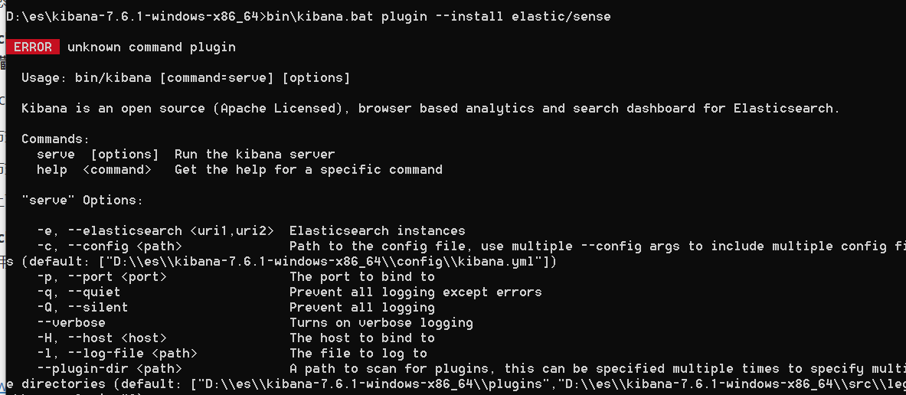
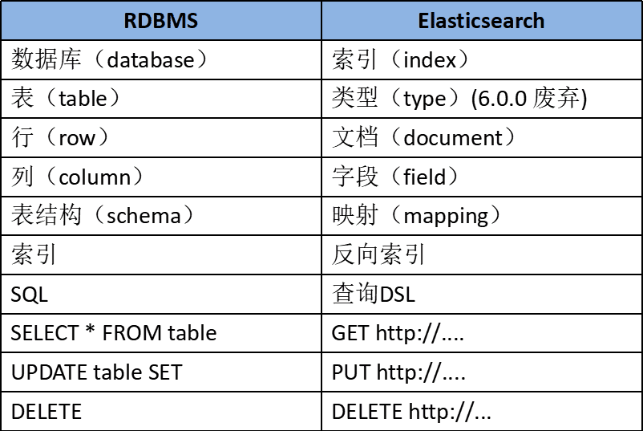
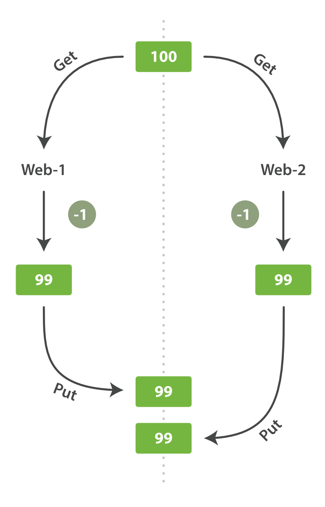
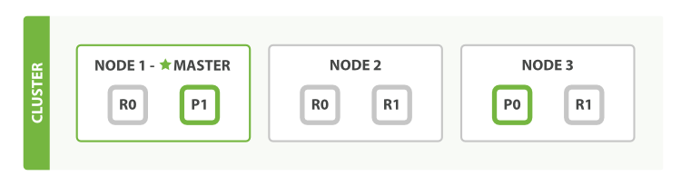
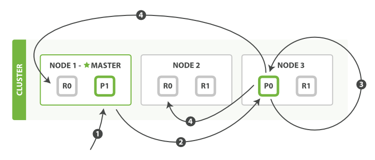
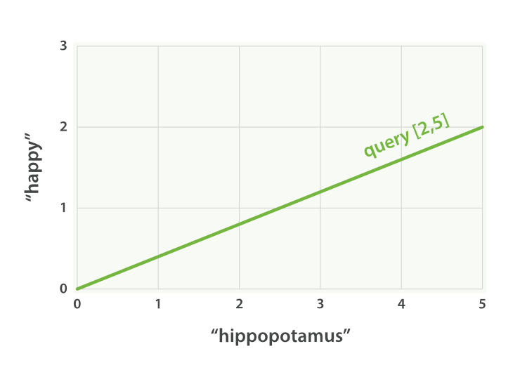

[TOC]
ElasticSearch入门
今年已经是工作的第五个年头了，随着经验的增长，处理工作中的业务需求自然是轻车熟路，但每天埋头于业务，又不免觉得自己的技术竞争力不够，因此决定慢慢补齐技术上的短板。es是一个流行的但工作中又没有使用到的技术，因此决定从先es开始学习，本文主要依赖于es官方文档，再辅以其他资料，力求能做到能理解es的基本原理、特性并熟悉其使用，即入门。
许多年前，一个刚结婚的名叫 Shay Banon 的失业开发者，跟着他的妻子去了伦敦，他的妻子在那里学习厨师。 在寻找一个赚钱的工作的时候，为了给他的妻子做一个食谱搜索引擎，他开始使用 Lucene 的一个早期版本。直接使用 Lucene 是很难的，因此 Shay 开始做一个抽象层，Java 开发者使用它可以很简单的给他们的程序添加搜索功能。 他发布了他的第一个开源项目 Compass。
后来 Shay 获得了一份工作，主要是高性能，分布式环境下的内存数据网格。这个对于高性能，实时，分布式搜索引擎的需求尤为突出， 他决定重写 Compass，把它变为一个独立的服务并取名 Elasticsearch。
第一个公开版本在2010年2月发布，从此以后，Elasticsearch 已经成为了 Github 上最活跃的项目之一，他拥有超过300名 contributors(目前736名 contributors )。 一家公司已经开始围绕 Elasticsearch 提供商业服务，并开发新的特性，但是，Elasticsearch 将永远开源并对所有人可用。
据说，Shay 的妻子还在等着她的食谱搜索引擎…
Elasticsearch 是一个实时的分布式搜索分析引擎，它能让你以前所未有的速度和规模，去探索你的数据。 它被用作全文检索、结构化搜索、分析以及这三个功能的组合：
- Wikipedia 使用 Elasticsearch 提供带有高亮片段的全文搜索，还有 search-as-you-type 和 did-you-mean 的建议。
- 卫报 使用 Elasticsearch 将网络社交数据结合到访客日志中，为它的编辑们提供公众对于新文章的实时反馈。
- Stack Overflow 将地理位置查询融入全文检索中去，并且使用 more-like-this 接口去查找相关的问题和回答。
- GitHub 使用 Elasticsearch 对1300亿行代码进行查询。
Elasticsearch 是一个开源的搜索引擎，建立在一个全文搜索引擎库 Apache Lucene™ 基础之上。 Lucene 可以说是当下最先进、高性能、全功能的搜索引擎库—无论是开源还是私有。
但是 Lucene 仅仅只是一个库。为了充分发挥其功能，你需要使用 Java 并将 Lucene 直接集成到应用程序中。 更糟糕的是，您可能需要获得信息检索学位才能了解其工作原理。Lucene 非常 复杂。
Elasticsearch 也是使用 Java 编写的，它的内部使用 Lucene 做索引与搜索，但是它的目的是使全文检索变得简单， 通过隐藏 Lucene 的复杂性，取而代之的提供一套简单一致的 RESTful API。
然而，Elasticsearch 不仅仅是 Lucene，并且也不仅仅只是一个全文搜索引擎。 它可以被下面这样准确的形容：
- 一个分布式的实时文档存储，每个字段 可以被索引与搜索
- 一个分布式实时分析搜索引擎
- 能胜任上百个服务节点的扩展，并支持 PB 级别的结构化或者非结构化数据
Elasticsearch 将所有的功能打包成一个单独的服务，这样你可以通过程序与它提供的简单的 RESTful API 进行通信， 可以使用自己喜欢的编程语言充当 web 客户端，甚至可以使用命令行（去充当这个客户端）。
安装
-
https://www.elastic.co/downloads/elasticsearch 如果使用jdk1.8，高版本会有问题，我这边下载的是7.6.1
-
执行 bin\elasticsearch.bat
-
curl ‘http://localhost:9200/?pretty’ 看看是否有响应
-
执行 bin\kibana.bat
-
访问 http://localhost:5601/
-
安装 Sense 插件，执行命令 bin\kibana.bat plugin –install elastic/sense，这个安装失败了

但其实这个无关紧要，因为这个插件就是个调试的地方，新版本已经有调试入口了，http://localhost:5601/app/kibana#/dev_tools/console
基础概念
- Near Realtime（NRT） 近实时。数据提交索引后，立马就可以搜索到。
- Cluster 集群，一个集群由一个唯一的名字标识，默认为“elasticsearch”。集群名称非常重要，具有相同集群名的节点才会组成一个集群。集群名称可以在配置文件中指定。
- Node 节点：存储集群的数据，参与集群的索引和搜索功能。像集群有名字，节点也有自己的名称，默认在启动时会以一个随机的UUID的前七个字符作为节点的名字，你可以为其指定任意的名字。通过集群名在网络中发现同伴组成集群。一个节点也可是集群。
- Index 索引: 一个索引是一个文档的集合。每个索引有唯一的名字，通过这个名字来操作它。一个集群中可以有任意多个索引。一个 索引 应该是因共同的特性被分组到一起的文档集合。 例如，你可能存储所有的产品在索引 products 中，而存储所有销售的交易到索引 sales 中。 虽然也允许存储不相关的数据到一个索引中，但这通常看作是一个反模式的做法。实际上，在 Elasticsearch 中，我们的数据是被存储和索引在 分片 中，而一个索引仅仅是逻辑上的命名空间， 这个命名空间由一个或者多个分片组合在一起。 然而，这是一个内部细节，我们的应用程序根本不应该关心分片，对于应用程序而言，只需知道文档位于一个 索引内。
- Type 类型：指在一个索引中，可以索引不同类型的文档，如用户数据、博客数据。**从6.0.0 版本起已废弃，一个索引中只存放一类数据。**数据可能在索引中只是松散的组合在一起，但是通常明确定义一些数据中的子分区是很有用的。 例如，所有的产品都放在一个索引中，但是你有许多不同的产品类别，比如 “electronics” 、 “kitchen” 和 “lawn-care”。这些文档共享一种相同的（或非常相似）的模式：他们有一个标题、描述、产品代码和价格。他们只是正好属于“产品”下的一些子类。Elasticsearch 公开了一个称为 types （类型）的特性，它允许您在索引中对数据进行逻辑分区。不同 types 的文档可能有不同的字段，但最好能够非常相似。 我们将在 类型和映射 中更多的讨论关于 types 的一些应用和限制。一个 _type 命名可以是大写或者小写，但是不能以下划线或者句号开头，不应该包含逗号， 并且长度限制为256个字符. 我们使用 blog 作为类型名举例。
- ID 是一个字符串，当它和 index 以及 type 组合就可以唯一确定 Elasticsearch 中的一个文档。 当你创建一个新的文档，要么提供自己的 _id ，要么让 Elasticsearch 帮你生成。
- Document 文档：被索引的一条数据，索引的基本信息单元，以JSON格式来表示。
一个文档不仅仅包含它的数据 ，也包含 元数据 — 有关文档的信息。 三个必须的元数据元素如下：
- _index 文档在哪存放
- _type 文档表示的对象类别
- _id 文档唯一标识
- Shard 分片：在创建一个索引时可以指定分成多少个分片来存储。每个分片本身也是一个功能完善且独立的“索引”，可以被放置在集群的任意节点上。
- Replication 备份: 一个分片可以有多个备份（副本）
和关系型数据库进行比较

基本语法
熟悉基本语法，跟着官网的介绍进行就行。
第一个业务需求是存储员工数据。 这将会以 员工文档 的形式存储：一个文档代表一个员工。存储数据到 Elasticsearch 的行为叫做 索引 ，但在索引一个文档之前，需要确定将文档存储在哪里。
一个 Elasticsearch 集群可以 包含多个 索引 ，相应的每个索引可以包含多个 类型 。 这些不同的类型存储着多个 文档 ，每个文档又有 多个 属性 。
你也许已经注意到 索引 这个词在 Elasticsearch 语境中有多种含义， 这里有必要做一些说明：
- 索引（名词）：如前所述，一个 索引 类似于传统关系数据库中的一个 数据库 ，是一个存储关系型文档的地方。 索引 (index) 的复数词为 indices 或 indexes 。
- 索引（动词）：索引一个文档 就是存储一个文档到一个 索引 （名词）中以便被检索和查询。这非常类似于 SQL 语句中的
INSERT关键词，除了文档已存在时，新文档会替换旧文档情况之外。 - 倒排索引：关系型数据库通过增加一个 索引 比如一个 B树（B-tree）索引 到指定的列上，以便提升数据检索速度。Elasticsearch 和 Lucene 使用了一个叫做 倒排索引 的结构来达到相同的目的。默认的，一个文档中的每一个属性都是 被索引 的（有一个倒排索引）和可搜索的。一个没有倒排索引的属性是不能被搜索到的。
索引员工文档-存储员工文档到索引-新增/修改
对于员工目录，我们将做如下操作：
- 每个员工索引一个文档，文档包含该员工的所有信息。
- 每个文档都将是
employee类型 。 - 该类型位于 索引
megacorp内。 - 该索引保存在我们的 Elasticsearch 集群中。
实践中这非常简单（尽管看起来有很多步骤），我们可以通过一条命令完成所有这些动作：
PUT /megacorp/employee/1
{
"first_name" : "John",
"last_name" : "Smith",
"age" : 25,
"about" : "I love to go rock climbing",
"interests": [ "sports", "music" ]
}
注意，路径 /megacorp/employee/1 包含了三部分的信息：
-
megacorp索引名称
-
employee类型名称
-
1特定雇员的ID
请求体 —— JSON 文档 —— 包含了这位员工的所有详细信息，他的名字叫 John Smith ，今年 25 岁，喜欢攀岩
新建文档-新增
PUT /megacorp/employee/15/_create
{
"first_name" : "tao",
"last_name" : "zheng",
"age" : 25,
"about" : "I love play",
"interests": [ "sports", "music" ]
}
新增文档-无需指定Id
使用POST即可
POST /megacorp/employee/
{
"first_name" : "wzgl",
"last_name" : "998877",
"age" : 25,
"about" : "I love play gaming",
"interests": [ "game", "music" ]
}
检索文档-搜索数据
目前我们已经在 Elasticsearch 中存储了一些数据， 接下来就能专注于实现应用的业务需求了。第一个需求是可以检索到单个雇员的数据。
这在 Elasticsearch 中很简单。简单地执行 一个 HTTP GET 请求并指定文档的地址——索引库、类型和ID。 使用这三个信息可以返回原始的 JSON 文档：
GET /megacorp/employee/1
返回信息为
{
"_index" : "megacorp",
"_type" : "employee",
"_id" : "1",
"_version" : 1,
"found" : true,
"_source" : {
"first_name" : "John",
"last_name" : "Smith",
"age" : 25,
"about" : "I love to go rock climbing",
"interests": [ "sports", "music" ]
}
}
_source字段就是原始 JSON 文档
删除文档-删除
和前面一致改为DELETE即可
DELETE /megacorp/employee/1
文档的部分更新
更新一个文档的方法是检索并修改它，然后重新索引整个文档（重新存储整个文档）。文档是不可变的：他们不能被修改，只能被替换。 update API 必须遵循同样的规则。 从外部来看，我们在一个文档的某个位置进行部分更新。然而在内部， update API 简单使用与之前描述相同的 检索-修改-重建索引 的处理过程。 区别在于这个过程发生在分片内部，这样就避免了多次请求的网络开销。通过减少检索和重建索引步骤之间的时间，我们也减少了其他进程的变更带来冲突的可能性。
update 请求最简单的一种形式是接收文档的一部分作为 doc 的参数， 它只是与现有的文档进行合并。对象被合并到一起，覆盖现有的字段，增加新的字段。 例如，我们增加字段 tags 和 views 到我们的博客文章，如下所示：
POST /megacorp/employee/15/_update
{
"doc" : {
"age" : 18
}
}
批量查询（id查询）-mget
Elasticsearch 的速度已经很快了，但甚至能更快。 将多个请求合并成一个，避免单独处理每个请求花费的网络延时和开销。 如果你需要从 Elasticsearch 检索很多文档，那么使用 multi-get 或者 mget API 来将这些检索请求放在一个请求中，将比逐个文档请求更快地检索到全部文档。
mget API 要求有一个 docs 数组作为参数，每个元素包含需要检索文档的元数据， 包括 _index 、 _type 和 _id 。id必传所以是通过id批量查询，如果你想检索一个或者多个特定的字段，那么你可以通过 _source 参数来指定这些字段的名字：
GET /_mget
{
"docs" : [
{
"_index" : "website",
"_type" : "blog",
"_id" : 2
},
{
"_index" : "website",
"_type" : "pageviews",
"_id" : 1,
"_source": "views"
}
]
}
该响应体也包含一个 docs 数组， 对于每一个在请求中指定的文档，这个数组中都包含有一个对应的响应，且顺序与请求中的顺序相同。 其中的每一个响应都和使用单个 get 请求所得到的响应体相同：
{
"docs" : [
{
"_index" : "website",
"_id" : "2",
"_type" : "blog",
"found" : true,
"_source" : {
"text" : "This is a piece of cake...",
"title" : "My first external blog entry"
},
"_version" : 10
},
{
"_index" : "website",
"_id" : "1",
"_type" : "pageviews",
"found" : true,
"_version" : 2,
"_source" : {
"views" : 2
}
}
]
}
批量新增/删除/修改-bulk
bulk API 允许在单个步骤中进行多次 create 、 index 、 update 或 delete 请求。 如果你需要索引一个数据流比如日志事件，它可以排队和索引数百或数千批次。bulk 与其他的请求体格式稍有不同，如下所示：
{ action: { metadata }}\n
{ request body }\n
{ action: { metadata }}\n
{ request body }\n
...
这种格式类似一个有效的单行 JSON 文档 流 ，它通过换行符(\n)连接到一起。注意两个要点：
- 每行一定要以换行符(
\n)结尾， 包括最后一行 。这些换行符被用作一个标记，可以有效分隔行。 - 这些行不能包含未转义的换行符，因为他们将会对解析造成干扰。这意味着这个 JSON 不 能使用 pretty 参数打印。
action/metadata 行指定 哪一个文档 做 什么操作 。
action 必须是以下选项之一:
create如果文档不存在，那么就创建它。index创建一个新文档或者替换一个现有的文档。。update部分更新一个文档。delete删除一个文档。
metadata 应该指定被索引、创建、更新或者删除的文档的 _index 、 _type 和 _id 。
例如，一个 delete 请求看起来是这样的：
{ "delete": { "_index": "website", "_type": "blog", "_id": "123" }}
request body 行由文档的 _source 本身组成—文档包含的字段和值。它是 index 和 create 操作所必需的，这是有道理的：你必须提供文档以索引。
它也是 update 操作所必需的，并且应该包含你传递给 update API 的相同请求体： doc 、 upsert 、 script 等等。 删除操作不需要 request body 行。
{ "create": { "_index": "website", "_type": "blog", "_id": "123" }}
{ "title": "My first blog post" }
如果不指定 _id ，将会自动生成一个 ID ：
{ "index": { "_index": "website", "_type": "blog" }}
{ "title": "My second blog post" }
为了把所有的操作组合在一起，一个完整的 bulk 请求 有以下形式:
POST /_bulk
{ "delete": { "_index": "website", "_type": "blog", "_id": "123" }}
{ "create": { "_index": "website", "_type": "blog", "_id": "123" }}
{ "title": "My first blog post" }
{ "index": { "_index": "website", "_type": "blog" }}
{ "title": "My second blog post" }
{ "update": { "_index": "website", "_type": "blog", "_id": "123", "_retry_on_conflict" : 3} }
{ "doc" : {"title" : "My updated blog post"} }
这个 Elasticsearch 响应包含 items 数组，这个数组的内容是以请求的顺序列出来的每个请求的结果。
{
"took": 4,
"errors": false,
"items": [
{ "delete": {
"_index": "website",
"_type": "blog",
"_id": "123",
"_version": 2,
"status": 200,
"found": true
}},
{ "create": {
"_index": "website",
"_type": "blog",
"_id": "123",
"_version": 3,
"status": 201
}},
{ "create": {
"_index": "website",
"_type": "blog",
"_id": "EiwfApScQiiy7TIKFxRCTw",
"_version": 1,
"status": 201
}},
{ "update": {
"_index": "website",
"_type": "blog",
"_id": "123",
"_version": 4,
"status": 200
}}
]
}
每个子请求都是独立执行，因此某个子请求的失败不会对其他子请求的成功与否造成影响。 如果其中任何子请求失败，最顶层的 error 标志被设置为 true ，并且在相应的请求报告出错误明细：
POST /_bulk
{ "create": { "_index": "website", "_type": "blog", "_id": "123" }}
{ "title": "Cannot create - it already exists" }
{ "index": { "_index": "website", "_type": "blog", "_id": "123" }}
{ "title": "But we can update it" }
在响应中，我们看到 create 文档 123 失败，因为它已经存在。但是随后的 index 请求，也是对文档 123 操作，就成功了：
{
"took": 3,
"errors": true,
"items": [
{ "create": {
"_index": "website",
"_type": "blog",
"_id": "123",
"status": 409,
"error": "DocumentAlreadyExistsException
[[website][4] [blog][123]:
document already exists]"
}},
{ "index": {
"_index": "website",
"_type": "blog",
"_id": "123",
"_version": 5,
"status": 200
}}
]
}
这也意味着 bulk 请求不是原子的： 不能用它来实现事务控制。每个请求是单独处理的，因此一个请求的成功或失败不会影响其他的请求。
Query DSL-DSL查询
查询表达式(Query DSL)是一种非常灵活又富有表现力的 查询语言。 Elasticsearch 使用它可以以简单的 JSON 接口来展现 Lucene 功能的绝大部分。在你的应用中，你应该用它来编写你的查询语句。它可以使你的查询语句更灵活、更精确、易读和易调试。
要使用这种查询表达式，只需将查询语句传递给 query 参数：
GET /_search
{
"query": 查询语句
}
一个查询语句的典型结构：
{
QUERY_NAME: {
ARGUMENT: VALUE,
ARGUMENT: VALUE,...
}
}
如果是针对某个字段，那么它的结构如下：
{
QUERY_NAME: {
FIELD_NAME: {
ARGUMENT: VALUE,
ARGUMENT: VALUE,...
}
}
}
例如：
GET /megacorp/employee/_search
{
"query" : {
"match" : {
"last_name" : "Smith"
}
}
}
返回为
#! Deprecation: [types removal] Specifying types in search requests is deprecated.
{
"took" : 0,
"timed_out" : false,
"_shards" : {
"total" : 1,
"successful" : 1,
"skipped" : 0,
"failed" : 0
},
"hits" : {
"total" : {
"value" : 2,
"relation" : "eq"
},
"max_score" : 0.4700036,
"hits" : [
{
"_index" : "megacorp",
"_type" : "employee",
"_id" : "2",
"_score" : 0.4700036,
"_source" : {
"first_name" : "Jane",
"last_name" : "Smith",
"age" : 32,
"about" : "I like to collect rock albums",
"interests" : [
"music"
]
}
},
{
"_index" : "megacorp",
"_type" : "employee",
"_id" : "1",
"_score" : 0.4700036,
"_source" : {
"first_name" : "John",
"last_name" : "Smith",
"age" : 25,
"about" : "I love to go rock climbing",
"interests" : [
"sports",
"music"
]
}
}
]
}
}
相关字段解释
took– Elasticsearch运行查询所花费的时间（以毫秒为单位）timed_out–搜索请求是否超时_shards- 搜索了多少个碎片，以及成功，失败或跳过了多少个碎片的细目分类。max_score– 找到的最相关文档的分数hits.total.value- 找到了多少个匹配的文档hits.sort- 文档的排序位置（不按相关性得分排序时）hits._score- 文档的相关性得分（使用match_all时不适用）
[types removal] Specifying types in search requests is deprecated.可以看到其实也告诉我们不需要指定类型了，因此改为
GET /megacorp/_search
{
"query" : {
"match" : {
"last_name" : "Smith"
}
}
}
match_all-查询所有
match_all表示查询所有的数据，sort即按照什么字段排序
GET /bank/_search
{
"query": { "match_all": {} },
"sort": [
{ "account_number": "asc" }
]
}
分页查询(from+size)
本质上就是from和size两个字段
GET /bank/_search
{
"query": { "match_all": {} },
"sort": [
{ "account_number": "asc" }
],
"from": 10,
"size": 10
}
match-指定字段查询
如果要在字段中搜索特定字词，可以使用match; 如下语句将查询address 字段中包含 mill 或者 lane的数据
GET /bank/_search
{
"query": { "match": { "address": "mill lane" } }
}
multi_match
multi_match 查询可以在多个字段上执行相同的 match 查询：
{
"multi_match": {
"query": "full text search",
"fields": [ "title", "body" ]
}
}
range 查询
range 查询找出那些落在指定区间内的数字或者时间：
{
"range": {
"age": {
"gte": 20,
"lt": 30
}
}
}
被允许的操作符如下：
-
gt大于 -
gte大于等于 -
lt小于 -
lte小于等于
match_phrase-匹配搜索词
如果我们希望查询的条件是 address字段中包含 “mill lane”，则可以使用match_phrase,不分词查询
GET /bank/_search
{
"query": { "match_phrase": { "address": "mill lane" } }
}
term 查询（match_phrase类似）
term 查询被用于精确值匹配，term 和 terms 是 必须包含（must contain） 操作，而不是 必须精确相等（must equal exactly） 。这些精确值可能是数字、时间、布尔或者那些 not_analyzed 的字符串：
{ "term": { "age": 26 }}
{ "term": { "date": "2014-09-01" }}
{ "term": { "public": true }}
{ "term": { "tag": "full_text" }}
term 查询对于输入的文本不分析 ，所以它将给定的值进行精确查询，不分词查询。
terms 查询
terms 查询和 term 查询一样，但它允许你指定多值进行匹配。如果这个字段包含了指定值中的任何一个值，那么这个文档满足条件：
{ "terms": { "tag": [ "search", "full_text", "nosql" ] }}
exists 查询和 missing 查询
exists 查询和 missing 查询被用于查找那些指定字段中有值 (exists) 或无值 (missing) 的文档。这与SQL中的 IS_NULL (missing) 和 NOT IS_NULL (exists) 在本质上具有共性：
{
"exists": {
"field": "title"
}
}
bool-组合多查询
现实的查询需求从来都没有那么简单；它们需要在多个字段上查询多种多样的文本，并且根据一系列的标准来过滤。为了构建类似的高级查询，你需要一种能够将多查询组合成单一查询的查询方法。
你可以用 bool 查询来实现你的需求。这种查询将多查询组合在一起，成为用户自己想要的布尔查询。它接收以下参数：
must文档 必须匹配这些条件才能被包含进来。must_not文档必须不匹配这些条件才能被包含进来。should如果满足这些语句中的任意语句，将增加_score，否则，无任何影响。它们主要用于修正每个文档的相关性得分。filter必须匹配，但它以不评分、过滤模式来进行。这些语句对评分没有贡献，只是根据过滤标准来排除或包含文档
下面的查询用于查找 title 字段匹配 how to make millions 并且不被标识为 spam 的文档。那些被标识为 starred 或在2014之后的文档，将比另外那些文档拥有更高的排名。如果 两者 都满足，那么它排名将更高：
{
"bool": {
"must": { "match": { "title": "how to make millions" }},
"must_not": { "match": { "tag": "spam" }},
"should": [
{ "match": { "tag": "starred" }},
{ "range": { "date": { "gte": "2014-01-01" }}}
]
}
}
如果没有 must 语句，那么至少需要能够匹配其中的一条 should 语句。但，如果存在至少一条 must 语句，则对 should 语句的匹配没有要求。
constant_score
尽管没有 bool 查询使用这么频繁，constant_score 查询也是你工具箱里有用的查询工具。它将一个不变的常量评分应用于所有匹配的文档。它被经常用于你只需要执行一个 filter 而没有其它查询（例如，评分查询）的情况下。可以使用它来取代只有 filter 语句的 bool 查询。在性能上是完全相同的，但对于提高查询简洁性和清晰度有很大帮助。
{
"constant_score": {
"filter": {
"term": { "category": "ebooks" }
}
}
}
_validate/query-验证查询
查询可以变得非常的复杂，尤其和不同的分析器与不同的字段映射结合时，理解起来就有点困难了。不过 validate-query API 可以用来验证查询是否合法。
GET /megacorp/_validate/query?explain
{
"query": {
"bool": {
"must": { "match": { "interests": "music" }},
"must_not": { "match": { "last_name": "Fir" }},
"should": [
{ "match": { "last_name": "Smith" }}
],
"filter": { "match": { "about": "climbing"}}
}
}
}
对于合法查询，使用 explain 参数将返回可读的描述，这对准确理解 Elasticsearch 是如何解析你的 query 是非常有用的：
{
"_shards" : {
"total" : 1,
"successful" : 1,
"failed" : 0
},
"valid" : true,
"explanations" : [
{
"index" : "megacorp",
"valid" : true,
"explanation" : "+interests:music -last_name:fir last_name:smith #about:climbing"
}
]
}
explanation中就是匹配过程
总结
其实es的语法是比较简单的，DSL语句和sql语句基本都差不多，学习es的难点更多还是在原理上。
es中的乐观锁
我们使用 index API 更新文档 ，可以一次性读取原始文档，做我们的修改，然后重新索引 整个文档 。 最近的索引请求将获胜：无论最后哪一个文档被索引，都将被唯一存储在 Elasticsearch 中。如果其他人同时更改这个文档，他们的更改将丢失。
很多时候这是没有问题的。也许我们的主数据存储是一个关系型数据库，我们只是将数据复制到 Elasticsearch 中并使其可被搜索。 也许两个人同时更改相同的文档的几率很小。或者对于我们的业务来说偶尔丢失更改并不是很严重的问题。
但有时丢失了一个变更就是 非常严重的 。试想我们使用 Elasticsearch 存储我们网上商城商品库存的数量， 每次我们卖一个商品的时候，我们在 Elasticsearch 中将库存数量减少。
有一天，管理层决定做一次促销。突然地，我们一秒要卖好几个商品。 假设有两个 web 程序并行运行，每一个都同时处理所有商品的销售，如图所示。

web_1 对 stock_count 所做的更改已经丢失，因为 web_2 不知道它的 stock_count 的拷贝已经过期。 结果我们会认为有超过商品的实际数量的库存，因为卖给顾客的库存商品并不存在，我们将让他们非常失望。
变更越频繁，读数据和更新数据的间隙越长，也就越可能丢失变更。es采用了乐观锁的方式来处理并发请求。
Elasticsearch 是分布式的。当文档创建、更新或删除时， 新版本的文档必须复制到集群中的其他节点。Elasticsearch 也是异步和并发的，这意味着这些复制请求被并行发送，并且到达目的地时也许 顺序是乱的 。 Elasticsearch 需要一种方法确保文档的旧版本不会覆盖新的版本。
当我们之前讨论 index ， GET 和 delete 请求时，我们指出每个文档都有一个 _version （版本）号，当文档被修改时版本号递增。 Elasticsearch 使用这个 _version 号来确保变更以正确顺序得到执行。如果旧版本的文档在新版本之后到达，它可以被简单的忽略。
我们可以利用 _version 号来确保 应用中相互冲突的变更不会导致数据丢失。我们通过指定想要修改文档的 version 号来达到这个目的。 如果该版本不是当前版本号，我们的请求将会失败。
让我们创建一个新的博客文章：
PUT /website/blog/1/_create
{
"title": "My first blog entry",
"text": "Just trying this out..."
}
响应体告诉我们，这个新创建的文档 _version 版本号是 1 。现在假设我们想编辑这个文档：我们加载其数据到 web 表单中， 做一些修改，然后保存新的版本。
首先我们检索文档:
GET /website/blog/1
响应体包含相同的 _version 版本号 1 ：
{
"_index" : "website",
"_type" : "blog",
"_id" : "1",
"_version" : 1,
"found" : true,
"_source" : {
"title": "My first blog entry",
"text": "Just trying this out..."
}
}
现在，当我们尝试通过重建文档的索引来保存修改，我们指定 version 为我们的修改会被应用的版本：
PUT /website/blog/1?version=1
{
"title": "My first blog entry",
"text": "Starting to get the hang of this..."
}
此请求成功，并且响应体告诉我们 _version 已经递增到 2 ：
{
"_index": "website",
"_type": "blog",
"_id": "1",
"_version": 2
"created": false
}
然而，如果我们重新运行相同的索引请求，仍然指定 version=1 ， Elasticsearch 返回 409 Conflict HTTP 响应码，和一个如下所示的响应体：
{
"error": {
"root_cause": [
{
"type": "version_conflict_engine_exception",
"reason": "[blog][1]: version conflict, current [2], provided [1]",
"index": "website",
"shard": "3"
}
],
"type": "version_conflict_engine_exception",
"reason": "[blog][1]: version conflict, current [2], provided [1]",
"index": "website",
"shard": "3"
},
"status": 409
}
这告诉我们在 Elasticsearch 中这个文档的当前 _version 号是 2 ，但我们指定的更新版本号为 1 。
所有文档的更新或删除 API，都可以接受 version 参数，这允许你在代码中使用乐观的并发控制，这是一种明智的做法。
通过外部系统使用版本控制
一个常见的设置是使用其它数据库作为主要的数据存储，使用 Elasticsearch 做数据检索， 这意味着主数据库的所有更改发生时都需要被复制到 Elasticsearch ，如果多个进程负责这一数据同步，你可能遇到类似于之前描述的并发问题。
如果你的主数据库已经有了版本号 — 或一个能作为版本号的字段值比如 timestamp — 那么你就可以在 Elasticsearch 中通过增加 version_type=external 到查询字符串的方式重用这些相同的版本号， 版本号必须是大于零的整数， 且小于 9.2E+18 — 一个 Java 中 long 类型的正值。
外部版本号的处理方式和我们之前讨论的内部版本号的处理方式有些不同， Elasticsearch 不是检查当前 _version 和请求中指定的版本号是否相同， 而是检查当前 _version 是否 小于 指定的版本号。 如果请求成功，外部的版本号作为文档的新 _version 进行存储。
外部版本号不仅在索引和删除请求是可以指定，而且在 创建 新文档时也可以指定。
例如，要创建一个新的具有外部版本号 5 的博客文章，我们可以按以下方法进行：
PUT /website/blog/2?version=5&version_type=external
{
"title": "My first external blog entry",
"text": "Starting to get the hang of this..."
}
在响应中，我们能看到当前的 _version 版本号是 5 ：
{
"_index": "website",
"_type": "blog",
"_id": "2",
"_version": 5,
"created": true
}
现在我们更新这个文档，指定一个新的 version 号是 10 ：
PUT /website/blog/2?version=10&version_type=external
{
"title": "My first external blog entry",
"text": "This is a piece of cake..."
}
请求成功并将当前 _version 设为 10 ：
{
"_index": "website",
"_type": "blog",
"_id": "2",
"_version": 10,
"created": false
}
如果你要重新运行此请求时，它将会失败，并返回像我们之前看到的同样的冲突错误， 因为指定的外部版本号不大于 Elasticsearch 的当前版本号。
总结
es中的乐观锁和我们自己实现的乐观锁是完全一样的，通过版本号字段来进行控制，不同的是，es支持两种模式，第一种就是当版本号相同允许更新操作，第二种就是只有当版本号大于当前版本号时允许更新操作。
文档存储的基本原理
路由一个文档到一个分片中
当索引一个文档（存储一个文档）的时候，文档会被存储到一个主分片中。 Elasticsearch 如何知道一个文档应该存放到哪个分片中呢？当我们创建文档时，它如何决定这个文档应当被存储在分片 1 还是分片 2 中呢？
首先这肯定不会是随机的，否则将来要获取文档的时候我们就不知道从何处寻找了。实际上，这个过程是根据下面这个公式决定的：
shard = hash(routing) % number_of_primary_shards
routing 是一个可变值，默认是文档的 _id ，也可以设置成一个自定义的值。 routing 通过 hash 函数生成一个数字，然后这个数字再除以 number_of_primary_shards （主分片的数量）后得到 余数 。这个分布在 0 到 number_of_primary_shards-1 之间的余数，就是我们所寻求的文档所在分片的位置。
这就解释了为什么我们要在创建索引的时候就确定好主分片的数量 并且永远不会改变这个数量：因为如果数量变化了，那么所有之前路由的值都会无效，文档也再也找不到了。
所有的文档 API（ get 、 index 、 delete 、 bulk 、 update 以及 mget ）都接受一个叫做 routing 的路由参数 ，通过这个参数我们可以自定义文档到分片的映射。一个自定义的路由参数可以用来确保所有相关的文档——例如所有属于同一个用户的文档——都被存储到同一个分片中。
主分片和副本分片如何交互
了说明目的, 我们 假设有一个集群由三个节点组成。 它包含一个叫 blogs 的索引，有两个主分片，每个主分片有两个副本分片。相同分片的副本不会放在同一节点。

我们可以发送请求到集群中的任一节点。 每个节点都有能力处理任意请求。 每个节点都知道集群中任一文档位置，所以可以直接将请求转发到需要的节点上。 在下面的例子中，将所有的请求发送到 Node 1 ，我们将其称为 协调节点
新建、索引和删除文档
新建、索引(新增或更新)和删除 请求都是 写 操作， 必须在主分片上面完成之后才能被复制到相关的副本分片，如下图所示

以下是在主副分片和任何副本分片上面 成功新建，索引和删除文档所需要的步骤顺序：
- 客户端向
Node 1发送新建、索引或者删除请求。 - 节点使用文档的
_id确定文档属于分片 0 。请求会被转发到Node 3，因为分片 0 的主分片目前被分配在Node 3上。 Node 3在主分片上面执行请求。如果成功了，它将请求并行转发到Node 1和Node 2的副本分片上。一旦所有的副本分片都报告成功,Node 3将向协调节点报告成功，协调节点向客户端报告成功。
在客户端收到成功响应时，文档变更已经在主分片和所有副本分片执行完成，变更是安全的。
有一些可选的请求参数允许您影响这个过程，可能以数据安全为代价提升性能。这些选项很少使用，因为Elasticsearch已经很快，但是为了完整起见，在这里阐述如下：
-
consistencyconsistency，即一致性。在默认设置下，即使仅仅是在试图执行一个_写_操作之前，主分片都会要求 必须要有 规定数量(quorum)（或者换种说法，也即必须要有大多数）的分片副本处于活跃可用状态，才会去执行_写_操作(其中分片副本可以是主分片或者副本分片)。这是为了避免在发生网络分区故障（network partition）的时候进行_写_操作，进而导致数据不一致。_规定数量_即：
int( (primary + number_of_replicas) / 2 ) + 1``consistency参数的值可以设为one（只要主分片状态 ok 就允许执行_写_操作）,all（必须要主分片和所有副本分片的状态没问题才允许执行_写_操作）, 或quorum。默认值为quorum, 即大多数的分片副本状态没问题就允许执行_写_操作。注意，规定数量 的计算公式中number_of_replicas指的是在索引设置中的设定副本分片数，而不是指当前处理活动状态的副本分片数。如果你的索引设置中指定了当前索引拥有三个副本分片，那规定数量的计算结果即：int( (primary + 3 replicas) / 2 ) + 1 = 3如果此时你只启动两个节点，那么处于活跃状态的分片副本数量就达不到规定数量，也因此您将无法索引和删除任何文档。 -
timeout如果没有足够的副本分片会发生什么？ Elasticsearch会等待，希望更多的分片出现。默认情况下，它最多等待1分钟。 如果你需要，你可以使用
timeout参数 使它更早终止：100100毫秒，30s是30秒。
新索引默认有 1 个副本分片，这意味着为满足 规定数量 应该 需要两个活动的分片副本。 但是，这些默认的设置会阻止我们在单一节点上做任何事情。为了避免这个问题，要求只有当 number_of_replicas 大于1的时候，规定数量才会执行。
查询一个文档
可以从主分片或者从其它任意副本分片检索文档 ，如下图所示

以下是从主分片或者副本分片检索文档的步骤顺序：
1、客户端向 Node 1 发送获取请求。
2、节点使用文档的 _id 来确定文档属于分片 0 。分片 0 的副本分片存在于所有的三个节点上。 在这种情况下，它将请求转发到 Node 2 。
3、Node 2 将文档返回给 Node 1 ，然后将文档返回给客户端。
在处理读取请求时，协调结点在每次请求的时候都会通过轮询所有的副本分片来达到负载均衡。
在文档被检索时，已经被索引的文档可能已经存在于主分片上但是还没有复制到副本分片。 在这种情况下，副本分片可能会报告文档不存在，但是主分片可能成功返回文档。 一旦索引请求成功返回给用户，文档在主分片和副本分片都是可用的。
部分更新文档-update
update API 结合了先前说明的读取和写入模式。

以下是部分更新一个文档的步骤：
- 客户端向
Node 1发送更新请求。 - 它将请求转发到主分片所在的
Node 3。 Node 3从主分片检索文档，修改_source字段中的 JSON ，并且尝试重新索引主分片的文档。 如果文档已经被另一个进程修改，它会重试步骤 3 ，超过retry_on_conflict次后放弃。- 如果
Node 3成功地更新文档，它将新版本的文档并行转发到Node 1和Node 2上的副本分片，重新建立索引。 一旦所有副本分片都返回成功，Node 3向协调节点也返回成功，协调节点向客户端返回成功。
update API 还接受 routing 、 replication 、 consistency 和 timeout 参数。
基于文档的复制
当主分片把更改转发到副本分片时， 它不会转发更新请求。 相反，它转发完整文档的新版本。请记住，这些更改将会异步转发到副本分片，并且不能保证它们以发送它们相同的顺序到达。 如果Elasticsearch仅转发更改请求，则可能以错误的顺序应用更改，导致得到损坏的文档。
批量操作-mget、bulk
mget 和 bulk API 的模式类似于单文档模式。区别在于协调节点知道每个文档存在于哪个分片中。 它将整个多文档请求分解成 每个分片 的多文档请求，并且将这些请求并行转发到每个参与节点。
协调节点一旦收到来自每个节点的应答，就将每个节点的响应收集整理成单个响应，返回给客户端

以下是使用单个 mget 请求取回多个文档所需的步骤顺序：
- 客户端向
Node 1发送mget请求。 Node 1为每个分片构建多文档获取请求，然后并行转发这些请求到托管在每个所需的主分片或者副本分片的节点上。一旦收到所有答复，Node 1构建响应并将其返回给客户端。
可以对 docs 数组中每个文档设置 routing 参数。
bulk API， 允许在单个批量请求中执行多个创建、索引、删除和更新请求。

bulk API 按如下步骤顺序执行：
- 客户端向
Node 1发送bulk请求。 Node 1为每个节点创建一个批量请求，并将这些请求并行转发到每个包含主分片的节点主机。- 主分片一个接一个按顺序执行每个操作。当每个操作成功时，主分片并行转发新文档（或删除）到副本分片，然后执行下一个操作。 一旦所有的副本分片报告所有操作成功，该节点将向协调节点报告成功，协调节点将这些响应收集整理并返回给客户端。
bulk API 还可以在整个批量请求的最顶层使用 consistency 参数，以及在每个请求中的元数据中使用 routing 参数。
总结
这一章比较偏理论，主要是介绍了es在多节点的时候数据怎么同步的，目前还未能完全理解，需要时常阅读才能吸收。
映射（Mapping）、分析（Analysis）
Elasticsearch 真正强大之处在于可以从无规律的数据中找出有意义的信息——从“大数据”到“大信息”。
Elasticsearch 不只会_存储（stores）_ 文档，为了能被搜索到也会为文档添加_索引（indexes）_ ，这也是为什么我们使用结构化的 JSON 文档，而不是无结构的二进制数据。
文档中的每个字段都将被索引并且可以被查询 。不仅如此，在简单查询时，Elasticsearch 可以使用 所有（all） 这些索引字段，以惊人的速度返回结果。这是你永远不会考虑用传统数据库去做的一些事情。
很多搜索都是开箱即用的，为了充分挖掘 Elasticsearch 的潜力，你需要理解以下三个概念：
- 映射（Mapping）描述数据在每个字段内如何存储
- 分析（Analysis）全文是如何处理使之可以被搜索的
- 领域特定查询语言（Query DSL） Elasticsearch 中强大灵活的查询语言
通过_mapping可以得到映射的类型
GET /megacorp/_mapping/
返回
{
"megacorp" : {
"mappings" : {
"properties" : {
"about" : {
"type" : "text",
"fields" : {
"keyword" : {
"type" : "keyword",
"ignore_above" : 256
}
}
},
"age" : {
"type" : "long"
},
"first_name" : {
"type" : "text",
"fields" : {
"keyword" : {
"type" : "keyword",
"ignore_above" : 256
}
}
},
"interests" : {
"type" : "text",
"fields" : {
"keyword" : {
"type" : "keyword",
"ignore_above" : 256
}
}
},
"last_name" : {
"type" : "text",
"fields" : {
"keyword" : {
"type" : "keyword",
"ignore_above" : 256
}
}
}
}
}
}
}
es会通过内部逻辑，将我们的数据映射为他内部的类型主要分为两类（精确值、全文），从而达到不同的搜索效果，精确搜索和全文搜索
-
精确值 如它们听起来那样精确。例如日期或者用户 ID，但字符串也可以表示精确值，例如用户名或邮箱地址。对于精确值来讲，
Foo和foo是不同的，2014和2014-09-15也是不同的。精确值很容易查询。结果是二进制的：要么匹配查询，要么不匹配。这种查询很容易用 SQL 表示：
WHERE name = "John Smith"
AND user_id = 2
AND date > "2014-09-15"
- 全文 是指文本数据（通常以人类容易识别的语言书写），例如一个推文的内容或一封邮件的内容。全文通常是指非结构化的数据，查询全文数据要微妙的多。我们问的不只是“这个文档匹配查询吗”，而是“该文档匹配查询的程度有多大？”换句话说，该文档与给定查询的相关性如何？我们很少对全文类型的域做精确匹配。相反，我们希望在文本类型的域中搜索。不仅如此，我们还希望搜索能够理解我们的 意图 ：
- 搜索
UK，会返回包含United Kindom的文档。 - 搜索
jump，会匹配jumped，jumps，jumping，甚至是leap。 - 搜索
johnny walker会匹配Johnnie Walker，johnnie depp应该匹配Johnny Depp。 fox news hunting应该返回福克斯新闻（ Foxs News ）中关于狩猎的故事，同时，fox hunting news应该返回关于猎狐的故事。
- 搜索
为了促进这类在全文域中的查询，Elasticsearch 首先 分析 文档，之后根据结果创建 倒排索引 。
倒排索引
Elasticsearch 使用一种称为 倒排索引 的结构，它适用于快速的全文搜索。一个倒排索引由文档中所有不重复词的列表构成，对于其中每个词，有一个包含它的文档列表。
例如，假设我们有两个文档，每个文档的 content 域包含如下内容：
- The quick brown fox jumped over the lazy dog
- Quick brown foxes leap over lazy dogs in summer
为了创建倒排索引，我们首先将每个文档的 content 域拆分成单独的 词（我们称它为 词条 或 tokens ），创建一个包含所有不重复词条的排序列表，然后列出每个词条出现在哪个文档。这一过程就叫分词。结果如下所示：
Term Doc_1 Doc_2
-------------------------
Quick | | X
The | X |
brown | X | X
dog | X |
dogs | | X
fox | X |
foxes | | X
in | | X
jumped | X |
lazy | X | X
leap | | X
over | X | X
quick | X |
summer | | X
the | X |
------------------------
现在，如果我们想搜索 quick brown ，我们只需要查找包含每个词条的文档：
Term Doc_1 Doc_2
-------------------------
brown | X | X
quick | X |
------------------------
Total | 2 | 1
两个文档都匹配，但是第一个文档比第二个匹配度更高。如果我们使用仅计算匹配词条数量的简单 相似性算法 ，那么，我们可以说，对于我们查询的相关性来讲，第一个文档比第二个文档更佳。
但是，我们目前的倒排索引有一些问题：
Quick和quick以独立的词条出现，然而用户可能认为它们是相同的词。fox和foxes非常相似, 就像dog和dogs；他们有相同的词根。jumped和leap, 尽管没有相同的词根，但他们的意思很相近。他们是同义词。
使用前面的索引搜索 +Quick +fox 不会得到任何匹配文档。（记住，+ 前缀表明这个词必须存在。）只有同时出现 Quick 和 fox 的文档才满足这个查询条件，但是第一个文档包含 quick fox ，第二个文档包含 Quick foxes 。
我们的用户可以合理的期望两个文档与查询匹配。我们可以做的更好。
如果我们将词条规范为标准模式，那么我们可以找到与用户搜索的词条不完全一致，但具有足够相关性的文档。例如：
Quick可以小写化为quick。foxes可以 词干提取 –变为词根的格式– 为fox。类似的，dogs可以为提取为dog。jumped和leap是同义词，可以索引为相同的单词jump。
现在索引看上去像这样：
Term Doc_1 Doc_2
-------------------------
brown | X | X
dog | X | X
fox | X | X
in | | X
jump | X | X
lazy | X | X
over | X | X
quick | X | X
summer | | X
the | X | X
------------------------
这还远远不够。我们搜索 +Quick +fox 仍然 会失败，因为在我们的索引中，已经没有 Quick 了。但是，如果我们对搜索的字符串使用与 content 域相同的标准化规则，会变成查询 +quick +fox ，这样两个文档都会匹配！
你只能搜索在索引中出现的词条，所以索引文本和查询字符串必须标准化为相同的格式。
分词和标准化的过程称为分析
分析
分析 包含下面的过程：
- 首先，将一块文本分成适合于倒排索引的独立的 词条 ，
- 之后，将这些词条统一化为标准格式以提高它们的“可搜索性”，或者 recall
分析器执行上面的工作。 分析器 实际上是将三个功能封装到了一个包里：
-
字符过滤器
首先，字符串按顺序通过每个 字符过滤器 。他们的任务是在分词前整理字符串。一个字符过滤器可以用来去掉HTML，或者将
&转化成and。 -
分词器
其次，字符串被 分词器 分为单个的词条。一个简单的分词器遇到空格和标点的时候，可能会将文本拆分成词条。
-
Token 过滤器
最后，词条按顺序通过每个 token 过滤器 。这个过程可能会改变词条（例如，小写化
Quick），删除词条（例如， 像a，and，the等无用词），或者增加词条（例如，像jump和leap这种同义词）。
Elasticsearch提供了开箱即用的字符过滤器、分词器和token 过滤器。 这些可以组合起来形成自定义的分析器以用于不同的目的。
内置分析器
但是， Elasticsearch还附带了可以直接使用的预包装的分析器。接下来我们会列出最重要的分析器。为了证明它们的差异，我们看看每个分析器会从下面的字符串得到哪些词条：
"Set the shape to semi-transparent by calling set_trans(5)"
-
标准分析器
标准分析器是Elasticsearch默认使用的分析器。它是分析各种语言文本最常用的选择。它根据 Unicode 联盟 定义的 单词边界 划分文本。删除绝大部分标点。最后，将词条小写。它会产生
set, the, shape, to, semi, transparent, by, calling, set_trans, 5 -
简单分析器
简单分析器在任何不是字母的地方分隔文本，将词条小写。它会产生
set, the, shape, to, semi, transparent, by, calling, set, trans -
空格分析器
空格分析器在空格的地方划分文本。它会产生
Set, the, shape, to, semi-transparent, by, calling, set_trans(5) -
语言分析器
特定语言分析器可用于 很多语言。它们可以考虑指定语言的特点。例如，
英语分析器附带了一组英语无用词（常用单词，例如and或者the，它们对相关性没有多少影响），它们会被删除。 由于理解英语语法的规则，这个分词器可以提取英语单词的 词干 。英语分词器会产生下面的词条：set, shape, semi, transpar, call, set_tran, 5注意看transparent、calling和set_trans已经变为词根格式。
什么时候使用分析器
当我们 索引 一个文档，它的全文域被分析成词条以用来创建倒排索引。 但是，当我们在全文域 搜索 的时候，我们需要将查询字符串通过 相同的分析过程 ，以保证我们搜索的词条格式与索引中的词条格式一致。
全文查询，理解每个域是如何定义的，因此它们可以做正确的事：
- 当你查询一个 全文 域时， 会对查询字符串应用相同的分析器，以产生正确的搜索词条列表。
- 当你查询一个 精确值 域时，不会分析查询字符串，而是搜索你指定的精确值。
现在你可以理解下面的查询为什么返回那样的结果：
date域包含一个精确值：单独的词条2014-09-15。_all域是一个全文域，所以分词进程将日期转化为三个词条：2014，09， 和15。
当我们在 _all 域查询 2014，它匹配所有的12条推文，因为它们都含有 2014 ：
GET /_search?q=2014 # 12 results
当我们在 _all 域查询 2014-09-15，它首先分析查询字符串，产生匹配 2014， 09， 或 15 中 任意 词条的查询。这也会匹配所有12条推文，因为它们都含有 2014 ：
GET /_search?q=2014-09-15 # 12 results !
当我们在 date 域查询 2014-09-15，它寻找 精确 日期，只找到一个推文：
GET /_search?q=date:2014-09-15 # 1 result
当我们在 date 域查询 2014，它找不到任何文档，因为没有文档含有这个精确日志：
GET /_search?q=date:2014 # 0 results !
测试分析器
有些时候很难理解分词的过程和实际被存储到索引中的词条，特别是你刚接触Elasticsearch。为了理解发生了什么，你可以使用 analyze API 来看文本是如何被分析的。在消息体里，指定分析器和要分析的文本：
GET /_analyze
{
"analyzer": "standard",
"text": "Text to analyze"
}
结果中每个元素代表一个单独的词条：
{
"tokens": [
{
"token": "text",
"start_offset": 0,
"end_offset": 4,
"type": "<ALPHANUM>",
"position": 1
},
{
"token": "to",
"start_offset": 5,
"end_offset": 7,
"type": "<ALPHANUM>",
"position": 2
},
{
"token": "analyze",
"start_offset": 8,
"end_offset": 15,
"type": "<ALPHANUM>",
"position": 3
}
]
}
token 是实际存储到索引中的词条。 position 指明词条在原始文本中出现的位置。 start_offset 和 end_offset 指明字符在原始字符串中的位置。
每个分析器的 type 值都不一样，可以忽略它们。它们在Elasticsearch中的唯一作用在于keep_types token 过滤器。
analyze API 是一个有用的工具，它有助于我们理解Elasticsearch索引内部发生了什么，随着深入，我们会进一步讨论它。
指定分析器
当Elasticsearch在你的文档中检测到一个新的字符串域，它会自动设置其为一个全文 字符串 域，使用 标准 分析器对它进行分析。
你不希望总是这样。可能你想使用一个不同的分析器，适用于你的数据使用的语言。有时候你想要一个字符串域就是一个字符串域—不使用分析，直接索引你传入的精确值，例如用户ID或者一个内部的状态域或标签。
要做到这一点，我们必须手动指定这些域的映射。
映射
为了能够将时间域视为时间，数字域视为数字，字符串域视为全文或精确值字符串， Elasticsearch 需要知道每个域中数据的类型。这个信息包含在映射中。
索引中每个文档都有 类型 。每种类型都有它自己的 映射 ，或者 模式定义 。映射定义了类型中的域，每个域的数据类型，以及Elasticsearch如何处理这些域。映射也用于配置与类型有关的元数据。
核心简单域类型
Elasticsearch 支持如下简单域类型：
- 字符串:
string - 整数 :
byte,short,integer,long - 浮点数:
float,double - 布尔型:
boolean - 日期:
date
当你索引一个包含新域的文档—之前未曾出现– Elasticsearch 会使用 动态映射，通过JSON中基本数据类型，尝试猜测域类型，使用如下规则：
| JSON type | 域 type |
|---|---|
布尔型: true 或者 false |
boolean |
整数: 123 |
long |
浮点数: 123.45 |
double |
字符串，有效日期: 2014-09-15 |
date |
字符串: foo bar |
string |
这意味着如果你通过引号( "123" )索引一个数字，它会被映射为 string 类型，而不是 long 。但是，如果这个域已经映射为 long ，那么 Elasticsearch 会尝试将这个字符串转化为 long ，如果无法转化，则抛出一个异常。
自定义域
尽管在很多情况下基本域数据类型已经够用，但你经常需要为单独域自定义映射，特别是字符串域。自定义映射允许你执行下面的操作：
- 全文字符串域和精确值字符串域的区别
- 使用特定语言分析器
- 优化域以适应部分匹配
- 指定自定义数据格式
域最重要的属性是 type 。对于不是 string 的域，你一般只需要设置 type ：
{
"number_of_clicks": {
"type": "integer"
}
}
默认， string 类型域会被认为包含全文。就是说，它们的值在索引前，会通过一个分析器，针对于这个域的查询在搜索前也会经过一个分析器。
string 域映射的两个最重要属性是 index 和 analyzer 。
index
index 属性控制怎样索引字符串。它可以是下面三个值：
-
analyzed首先分析字符串，然后索引它。换句话说，以全文索引这个域。
-
not_analyzed索引这个域，所以它能够被搜索，但索引的是精确值。不会对它进行分析。
-
no不索引这个域。这个域不会被搜索到。
string 域 index 属性默认是 analyzed 。如果我们想映射这个字段为一个精确值，我们需要设置它为 not_analyzed ：
{
"tag": {
"type": "string",
"index": "not_analyzed"
}
}
其他简单类型（例如 long ， double ， date 等）也接受 index 参数，但有意义的值只有 no 和 not_analyzed ， 因为它们永远不会被分析。
analyzer
对于 analyzed 字符串域，用 analyzer 属性指定在搜索和索引时使用的分析器。默认， Elasticsearch 使用 standard 分析器， 但你可以指定一个内置的分析器替代它，例如 whitespace 、 simple 和 english：
{
"tweet": {
"type": "string",
"analyzer": "english"
}
}
更新映射
当你首次创建一个索引的时候，可以指定类型的映射。你也可以使用 /_mapping 为新类型（或者为存在的类型更新映射）增加映射。
尽管你可以 增加 一个存在的映射，你不能 修改 存在的域映射。如果一个域的映射已经存在，那么该域的数据可能已经被索引。如果你意图修改这个域的映射，索引的数据可能会出错，不能被正常的搜索。
我们可以更新一个映射来添加一个新域，但不能将一个存在的域从 analyzed 改为 not_analyzed 。
为了描述指定映射的两种方式，我们先删除 gd 索引：
DELETE /gb
然后创建一个新索引，指定 tweet 域使用 english 分析器：
PUT /gb
{
"mappings": {
"tweet" : {
"properties" : {
"tweet" : {
"type" : "string",
"analyzer": "english"
},
"date" : {
"type" : "date"
},
"name" : {
"type" : "string"
},
"user_id" : {
"type" : "long"
}
}
}
}
}
稍后，我们决定在 tweet 映射增加一个新的名为 tag 的 not_analyzed 的文本域，使用 _mapping ：
PUT /gb/_mapping/tweet
{
"properties" : {
"tag" : {
"type" : "string",
"index": "not_analyzed"
}
}
}
注意，我们不需要再次列出所有已存在的域，因为无论如何我们都无法改变它们。新域已经被合并到存在的映射中。
测试映射
你可以使用 analyze API 测试字符串域的映射。比较下面两个请求的输出：
GET /gb/_analyze
{
"field": "tweet",
"text": "Black-cats"
}
GET /gb/_analyze
{
"field": "tag",
"text": "Black-cats"
}
tweet 域产生两个词条 black 和 cat ， tag 域产生单独的词条 Black-cats 。换句话说，我们的映射正常工作。
复杂核心域类型
除了我们提到的简单标量数据类型， JSON 还有 null 值，数组，和对象，这些 Elasticsearch 都是支持的。
多值域
很有可能，我们希望 tag 域包含多个标签。我们可以以数组的形式索引标签：
{ "tag": [ "search", "nosql" ]}
对于数组，没有特殊的映射需求。任何域都可以包含0、1或者多个值，就像全文域分析得到多个词条。
这暗示 数组中所有的值必须是相同数据类型的 。你不能将日期和字符串混在一起。如果你通过索引数组来创建新的域，Elasticsearch 会用数组中第一个值的数据类型作为这个域的 类型 。
当你从 Elasticsearch 得到一个文档，每个数组的顺序和你当初索引文档时一样。你得到的 _source 域，包含与你索引的一模一样的 JSON 文档。
但是，数组是以多值域 索引的—可以搜索，但是无序的。 在搜索的时候，你不能指定 “第一个” 或者 “最后一个”。 更确切的说，把数组想象成 装在袋子里的值 。
空域
当然，数组可以为空。这相当于存在零值。 事实上，在 Lucene 中是不能存储 null 值的，所以我们认为存在 null 值的域为空域。
下面三种域被认为是空的，它们将不会被索引：
"null_value": null,
"empty_array": [],
"array_with_null_value": [ null ]
多层级对象
我们讨论的最后一个 JSON 原生数据类是 对象 – 在其他语言中称为哈希，哈希 map，字典或者关联数组。
内部对象 经常用于嵌入一个实体或对象到其它对象中。例如，与其在 tweet 文档中包含 user_name 和 user_id 域，我们也可以这样写：
{
"tweet": "Elasticsearch is very flexible",
"user": {
"id": "@johnsmith",
"gender": "male",
"age": 26,
"name": {
"full": "John Smith",
"first": "John",
"last": "Smith"
}
}
}
内部对象的映射
Elasticsearch 会动态监测新的对象域并映射它们为 对象 ，在 properties 属性下列出内部域：
{
"gb": {
"tweet": {
"properties": {
"tweet": { "type": "string" },
"user": {
"type": "object",
"properties": {
"id": { "type": "string" },
"gender": { "type": "string" },
"age": { "type": "long" },
"name": {
"type": "object",
"properties": {
"full": { "type": "string" },
"first": { "type": "string" },
"last": { "type": "string" }
}
}
}
}
}
}
}
}
user 和 name 域的映射结构与 tweet 类型的相同。事实上， type 映射只是一种特殊的 对象 映射，我们称之为 根对象 。除了它有一些文档元数据的特殊顶级域，例如 _source 和 _all 域，它和其他对象一样。
内部对象是如何索引的
Lucene 不理解内部对象。 Lucene 文档是由一组键值对列表组成的。为了能让 Elasticsearch 有效地索引内部类，它把我们的文档转化成这样：
{
"tweet": [elasticsearch, flexible, very],
"user.id": [@johnsmith],
"user.gender": [male],
"user.age": [26],
"user.name.full": [john, smith],
"user.name.first": [john],
"user.name.last": [smith]
}
内部域 可以通过名称引用（例如， first ）。为了区分同名的两个域，我们可以使用全 路径 （例如， user.name.first ） 或 type 名加路径（ tweet.user.name.first ）。
在前面简单扁平的文档中，没有 user 和 user.name 域。Lucene 索引只有标量和简单值，没有复杂数据结构。
内部对象数组
最后，考虑包含内部对象的数组是如何被索引的。 假设我们有个 followers 数组：
{
"followers": [
{ "age": 35, "name": "Mary White"},
{ "age": 26, "name": "Alex Jones"},
{ "age": 19, "name": "Lisa Smith"}
]
}
这个文档会像我们之前描述的那样被扁平化处理，结果如下所示：
{
"followers.age": [19, 26, 35],
"followers.name": [alex, jones, lisa, smith, mary, white]
}
{age: 35} 和 {name: Mary White} 之间的相关性已经丢失了，因为每个多值域只是一包无序的值，而不是有序数组。这足以让我们问，“有一个26岁的追随者？”
但是我们不能得到一个准确的答案：“是否有一个26岁 名字叫 Alex Jones 的追随者？”
总结
这章主要是解释了es如何将存入的数据变成可搜索的数据的，即通过映射和分析，映射-将每个属性对应为es的不同类型，分析-通过分词、把分词之后的此条标准化，最后生成倒排索引。生成了倒排索引后数据就变成了可搜索的数据，es会查询数据应用的分析器，以产生正确的搜索词条列表，如果自己指定分析器，创建和搜索时一定要保持一致。
排序与相关性
默认情况下，返回的结果是按照 相关性 进行排序的——最相关的文档排在最前。
排序
为了按照相关性来排序，需要将相关性表示为一个数值。在 Elasticsearch 中， 相关性得分 由一个浮点数进行表示，并在搜索结果中通过 _score 参数返回， 默认排序是 _score 降序。
按照字段的值排序
通过时间来对 tweets 进行排序是有意义的，最新的 tweets 排在最前。 我们可以使用 sort 参数进行实现：
GET /_search
{
"query" : {
"bool" : {
"filter" : { "term" : { "user_id" : 1 }}
}
},
"sort": { "date": { "order": "desc" }}
}
你会注意到结果中的两个不同点：_score 不被计算, 因为它并没有用于排序。
"hits" : {
"total" : 6,
"max_score" : null,
"hits" : [ {
"_index" : "us",
"_type" : "tweet",
"_id" : "14",
"_score" : null,
"_source" : {
"date": "2014-09-24",
...
},
"sort" : [ 1411516800000 ]
},
...
}
首先我们在每个结果中有一个新的名为 sort 的元素，它包含了我们用于排序的值。 在这个案例中，我们按照 date 进行排序，在内部被索引为 自 epoch 以来的毫秒数 。 long 类型数 1411516800000 等价于日期字符串 2014-09-24 00:00:00 UTC 。其次 _score 和 max_score 字段都是 null 。
多级排序
假定我们想要结合使用 date 和 _score 进行查询，并且匹配的结果首先按照日期排序，然后按照相关性排序：
GET /_search
{
"query" : {
"bool" : {
"must": { "match": { "tweet": "manage text search" }},
"filter" : { "term" : { "user_id" : 2 }}
}
},
"sort": [
{ "date": { "order": "desc" }},
{ "_score": { "order": "desc" }}
]
}
排序条件的顺序是很重要的。结果首先按第一个条件排序，仅当结果集的第一个 sort 值完全相同时才会按照第二个条件进行排序，以此类推。
多级排序并不一定包含 _score 。你可以根据一些不同的字段进行排序，如地理距离或是脚本计算的特定值。
相关性
我们曾经讲过，默认情况下，返回结果是按相关性倒序排列的。 但是什么是相关性？ 相关性如何计算？
每个文档都有相关性评分，用一个正浮点数字段 _score 来表示 。 _score 的评分越高，相关性越高。
查询语句会为每个文档生成一个 _score 字段。评分的计算方式取决于查询类型 不同的查询语句用于不同的目的： fuzzy 查询会计算与关键词的拼写相似程度，terms 查询会计算 找到的内容与关键词组成部分匹配的百分比，但是通常我们说的 relevance 是我们用来计算全文本字段的值相对于全文本检索词相似程度的算法。
Elasticsearch 的相似度算法被定义为检索词频率/反向文档频率， TF/IDF ，包括以下内容：
-
检索词频率
检索词在该字段出现的频率？出现频率越高，相关性也越高。 字段中出现过 5 次要比只出现过 1 次的相关性高。
-
反向文档频率
每个检索词在索引中出现的频率？频率越高，相关性越低。检索词出现在多数文档中会比出现在少数文档中的权重更低。
-
字段长度准则
字段的长度是多少？长度越长，相关性越低。 检索词出现在一个短的 title 要比同样的词出现在一个长的 content 字段权重更大。
单个查询可以联合使用 TF/IDF 和其他方式，比如短语查询中检索词的距离或模糊查询里的检索词相似度。
相关性并不只是全文本检索的专利。也适用于 yes|no 的子句，匹配的子句越多，相关性评分越高。
如果多条查询子句被合并为一条复合查询语句，比如 bool 查询，则每个查询子句计算得出的评分会被合并到总的相关性评分中。
理解评分标准
当调试一条复杂的查询语句时，想要理解 _score 究竟是如何计算是比较困难的。Elasticsearch 在 每个查询语句中都有一个 explain 参数，将 explain 设为 true 就可以得到更详细的信息。
GET /_search?explain
{
"query" : { "match" : { "tweet" : "honeymoon" }}
}
增加一个 explain 参数会为每个匹配到的文档产生一大堆额外内容，但是花时间去理解它是很有意义的。 如果现在看不明白也没关系 — 等你需要的时候再来回顾这一节就行。下面我们来一点点的了解这块知识点。
首先，我们看一下普通查询返回的元数据：
{
"_index" : "us",
"_type" : "tweet",
"_id" : "12",
"_score" : 0.076713204,
"_source" : { ... trimmed ... },
这里加入了该文档来自于哪个节点哪个分片上的信息，这对我们是比较有帮助的，因为词频率和 文档频率是在每个分片中计算出来的，而不是每个索引中：
"_shard" : 1,
"_node" : "mzIVYCsqSWCG_M_ZffSs9Q",
然后它提供了 _explanation 。每个入口都包含一个 description 、 value 、 details 字段，它分别告诉你计算的类型、计算结果和任何我们需要的计算细节。
"_explanation": {
"description": "weight(tweet:honeymoon in 0)
[PerFieldSimilarity], result of:",
"value": 0.076713204,
"details": [
{
"description": "fieldWeight in 0, product of:",
"value": 0.076713204,
"details": [
{
"description": "tf(freq=1.0), with freq of:",
"value": 1,
"details": [
{
"description": "termFreq=1.0",
"value": 1
}
]
},
{
"description": "idf(docFreq=1, maxDocs=1)",
"value": 0.30685282
},
{
"description": "fieldNorm(doc=0)",
"value": 0.25,
}
]
}
]
}
第一部分是关于计算的总结。告诉了我们 honeymoon 在 tweet 字段中的检索词频率/反向文档频率或TF/IDF， （这里的文档 0 是一个内部的 ID，跟我们没有关系，可以忽略。）
然后它提供了权重是如何计算的细节：
检索词频率:
{
"description": "tf(freq=1.0), with freq of:",
"value": 1,
"details": [
{
"description": "termFreq=1.0",
"value": 1
}
]
}
检索词 `honeymoon` 在这个文档的 `tweet` 字段中的出现次数。
反向文档频率:
{
"description": "idf(docFreq=1, maxDocs=1)",
"value": 0.30685282
}
检索词 `honeymoon` 在索引上所有文档的 `tweet` 字段中出现的次数。
字段长度准则:
{
"description": "fieldNorm(doc=0)",
"value": 0.25,
}
在这个文档中， `tweet` 字段内容的长度 -- 内容越长，值越小。
复杂的查询语句解释也非常复杂，但是包含的内容与上面例子大致相同。
理解文档是如何被匹配到的
当 explain 选项加到某一文档上时， explain api 会帮助你理解为何这个文档会被匹配，更重要的是，一个文档为何没有被匹配。
请求路径为 /index/type/id/_explain ，如下所示：
GET /us/tweet/12/_explain
{
"query" : {
"bool" : {
"filter" : { "term" : { "user_id" : 2 }},
"must" : { "match" : { "tweet" : "honeymoon" }}
}
}
}
不只是我们之前看到的充分解释 ，我们现在有了一个 description 元素，它将告诉我们：
"failure to match filter: cache(user_id:[2 TO 2])"
也就是说我们的 user_id 过滤子句使该文档不能匹配到。
高级搜索
经过前面的学习，我们能够开始用 Elasticsearch 搜索数据。用不了多长时间，就会发现我们想要的更多：希望查询匹配更灵活，排名结果更精确，不同问题域下搜索更具体。
搜索不仅仅是全文搜索：我们很大一部分数据都是结构化的，如日期和数字。我们会以说明结构化搜索与全文搜索最高效的结合方式开始本章的内容。
结构化搜索
结构化搜索（Structured search） 是指查询那些具有内在结构数据的过程。比如日期、时间和数字都是结构化的：它们有精确的格式，我们可以对这些格式进行逻辑操作。比较常见的操作包括比较数字或时间的范围，或判定两个值的大小。
文本也可以是结构化的。如彩色笔可以有离散的颜色集合： 红（red） 、 绿（green） 、 蓝（blue） 。一个博客可能被标记了关键词 分布式（distributed） 和 搜索（search） 。电商网站上的商品都有 UPCs（通用产品码 Universal Product Codes）或其他的唯一标识，它们都需要遵从严格规定的、结构化的格式。
在结构化查询中，我们得到的结果为是或不是，要么存于集合之中，要么存在集合之外。结构化查询不关心文件的相关度或评分；它简单的对文档包括或排除处理。
这在逻辑上是能说通的，因为一个数字不能比其他数字 更 适合存于某个相同范围。结果只能是：存于范围之中或反之。同样，对于结构化文本来说，一个值要么相等，要么不等。
精确值查找
当进行精确值查找时， 我们会使用过滤器（filters）。因为它们执行速度非常快，不会计算相关度（直接跳过了整个评分阶段）而且很容易被缓存。
term 查询数字
我们首先来看最为常用的 term 查询， 可以用它处理数字（numbers）、布尔值（Booleans）、日期（dates）以及文本（text）。
我们想要做的是查找具有某个价格的所有产品，有关系数据库背景的人肯定熟悉 SQL，如果我们将其用 SQL 形式表达，会是下面这样：
SELECT document
FROM products
WHERE price = 20
在 Elasticsearch 的查询表达式（query DSL）中，我们可以使用 term 查询达到相同的目的。 term 查询会查找我们指定的精确值。作为其本身， term 查询是简单的。它接受一个字段名以及我们希望查找的数值：
{
"term" : {
"price" : 20
}
}
通常当查找一个精确值的时候，我们不希望对查询进行评分计算。只希望对文档进行包括或排除的计算，所以我们会使用 constant_score 查询以非评分模式来执行 term 查询并以一作为统一评分。
最终组合的结果是一个 constant_score 查询，它包含一个 term 查询：
GET /my_store/products/_search
{
"query" : {
"constant_score" : {
"filter" : {
"term" : {
"price" : 20
}
}
}
}
}
执行后，这个查询所搜索到的结果与我们期望的一致：只有文档 2 命中并作为结果返回（因为只有 2 的价格是 20 ）:
"hits" : [
{
"_index" : "my_store",
"_type" : "products",
"_id" : "2",
"_score" : 1.0,
"_source" : {
"price" : 20,
"productID" : "KDKE-B-9947-#kL5"
}
}
]
查询置于 filter 语句内不进行评分或相关度的计算，所以所有的结果都会返回一个默认评分 1 。
term 查询文本
如本部分开始处提到过的一样 ，使用 term 查询匹配字符串和匹配数字一样容易。如果我们想要查询某个具体 UPC ID 的产品，使用 SQL 表达式会是如下这样：
SELECT product
FROM products
WHERE productID = "XHDK-A-1293-#fJ3"
转换成查询表达式（query DSL），同样使用 term 查询，形式如下：
GET /my_store/products/_search
{
"query" : {
"constant_score" : {
"filter" : {
"term" : {
"productID" : "XHDK-A-1293-#fJ3"
}
}
}
}
}
但这里有个小问题：我们无法获得期望的结果。为什么呢？问题不在 term 查询，而在于索引数据的方式。 如果我们使用 analyze API，我们可以看到这里的 UPC 码被拆分成多个更小的 token -被分词了：
GET /my_store/_analyze
{
"field": "productID",
"text": "XHDK-A-1293-#fJ3"
}
{
"tokens" : [ {
"token" : "xhdk",
"start_offset" : 0,
"end_offset" : 4,
"type" : "<ALPHANUM>",
"position" : 1
}, {
"token" : "a",
"start_offset" : 5,
"end_offset" : 6,
"type" : "<ALPHANUM>",
"position" : 2
}, {
"token" : "1293",
"start_offset" : 7,
"end_offset" : 11,
"type" : "<NUM>",
"position" : 3
}, {
"token" : "fj3",
"start_offset" : 13,
"end_offset" : 16,
"type" : "<ALPHANUM>",
"position" : 4
} ]
}
这里有几点需要注意：
- Elasticsearch 用 4 个不同的 token 而不是单个 token 来表示这个 UPC 。
- 所有字母都是小写的。
- 丢失了连字符和哈希符（
#）。
所以当我们用 term 查询查找精确值 XHDK-A-1293-#fJ3 的时候，找不到任何文档，因为它并不在我们的倒排索引中，正如前面呈现出的分析结果，索引里有四个 token 。
显然这种对 ID 码或其他任何精确值的处理方式并不是我们想要的。
为了避免这种问题，我们需要告诉 Elasticsearch 该字段具有精确值，要将其设置成 not_analyzed 无需分析的。 为了修正搜索结果，我们需要首先删除旧索引（因为它的映射不再正确）然后创建一个能正确映射的新索引：
DELETE /my_store
PUT /my_store
{
"mappings" : {
"products" : {
"properties" : {
"productID" : {
"type" : "string",
"index" : "not_analyzed"
}
}
}
}
}
现在我们可以为文档重建索引：
POST /my_store/products/_bulk
{ "index": { "_id": 1 }}
{ "price" : 10, "productID" : "XHDK-A-1293-#fJ3" }
{ "index": { "_id": 2 }}
{ "price" : 20, "productID" : "KDKE-B-9947-#kL5" }
{ "index": { "_id": 3 }}
{ "price" : 30, "productID" : "JODL-X-1937-#pV7" }
{ "index": { "_id": 4 }}
{ "price" : 30, "productID" : "QQPX-R-3956-#aD8" }
此时， term 查询就能搜索到我们想要的结果，让我们再次搜索新索引过的数据（注意，查询和过滤并没有发生任何改变，改变的是数据映射的方式）：
GET /my_store/products/_search
{
"query" : {
"constant_score" : {
"filter" : {
"term" : {
"productID" : "XHDK-A-1293-#fJ3"
}
}
}
}
}
因为 productID 字段是未分析过的， term 查询不会对其做任何分析，查询会进行精确查找并返回文档 1 。成功！
内部过滤器的操作
在内部，Elasticsearch 会在运行非评分查询的时执行多个操作：
-
查找匹配文档.
term查询在倒排索引中查找XHDK-A-1293-#fJ3然后获取包含该 term 的所有文档。本例中，只有文档 1 满足我们要求。 -
创建 bitset.
过滤器会创建一个 bitset （一个包含 0 和 1 的数组），它描述了哪个文档会包含该 term 。匹配文档的标志位是 1 。本例中，bitset 的值为
[1,0,0,0]。在内部，它表示成一个 “roaring bitmap”，可以同时对稀疏或密集的集合进行高效编码。 -
迭代 bitset(s)
一旦为每个查询生成了 bitsets ，Elasticsearch 就会循环迭代 bitsets 从而找到满足所有过滤条件的匹配文档的集合。执行顺序是启发式的，但一般来说先迭代稀疏的 bitset （因为它可以排除掉大量的文档）。
-
增量使用计数.
Elasticsearch 能够缓存非评分查询从而获取更快的访问，但是它也会不太聪明地缓存一些使用极少的东西。非评分计算因为倒排索引已经足够快了，所以我们只想缓存那些我们 知道 在将来会被再次使用的查询，以避免资源的浪费。
为了实现以上设想，Elasticsearch 会为每个索引跟踪保留查询使用的历史状态。如果查询在最近的 256 次查询中会被用到，那么它就会被缓存到内存中。当 bitset 被缓存后，缓存会在那些低于 10,000 个文档（或少于 3% 的总索引数）的段（segment）中被忽略。这些小的段即将会消失，所以为它们分配缓存是一种浪费。
非评分计算是首先执行的，这将有助于写出高效又快速的搜索请求。
缓存
过滤器的核心实际是采用一个 bitset 记录与过滤器匹配的文档。Elasticsearch 积极地把这些 bitset 缓存起来以备随后使用。一旦缓存成功，bitset 可以复用 任何 已使用过的相同过滤器，而无需再次计算整个过滤器。
这些 bitsets 缓存是“智能”的：它们以增量方式更新。当我们索引新文档时，只需将那些新文档加入已有 bitset，而不是对整个缓存一遍又一遍的重复计算。和系统其他部分一样，过滤器是实时的，我们无需担心缓存过期问题。
独立的过滤器缓存
属于一个查询组件的 bitsets 是独立于它所属搜索请求其他部分的。这就意味着，一旦被缓存，一个查询可以被用作多个搜索请求。bitsets 并不依赖于它所存在的查询上下文。这样使得缓存可以加速查询中经常使用的部分，从而降低较少、易变的部分所带来的消耗。
同样，如果单个请求重用相同的非评分查询，它缓存的 bitset 可以被单个搜索里的所有实例所重用。
让我们看看下面例子中的查询，它查找满足以下任意一个条件的电子邮件：
- 在收件箱中，且没有被读过的
- 不在 收件箱中，但被标注重要的
GET /inbox/emails/_search
{
"query": {
"constant_score": {
"filter": {
"bool": {
"should": [
{ "bool": {
"must": [
{ "term": { "folder": "inbox" }},
{ "term": { "read": false }}
]
}},
{ "bool": {
"must_not": {
"term": { "folder": "inbox" }
},
"must": {
"term": { "important": true }
}
}}
]
}
}
}
}
}
尽管其中一个收件箱的条件是 must 语句，另一个是 must_not 语句，但他们两者是完全相同的。这意味着在第一个语句执行后， bitset 就会被计算然后缓存起来供另一个使用。当再次执行这个查询时，收件箱的这个过滤器已经被缓存了，所以两个语句都会使用已缓存的 bitset 。
这点与查询表达式（query DSL）的可组合性结合得很好。它易被移动到表达式的任何地方，或者在同一查询中的多个位置复用。这不仅能方便开发者，而且对提升性能有直接的益处。
自动缓存行为
在 Elasticsearch 的较早版本中，默认的行为是缓存一切可以缓存的对象。这也通常意味着系统缓存 bitsets 太富侵略性，从而因为清理缓存带来性能压力。不仅如此，尽管很多过滤器都很容易被评价，但本质上是慢于缓存的（以及从缓存中复用）。缓存这些过滤器的意义不大，因为可以简单地再次执行过滤器。
检查一个倒排是非常快的，然而绝大多数查询组件却很少使用它。例如 term 过滤字段 "user_id" ：如果有上百万的用户，每个具体的用户 ID 出现的概率都很小。那么为这个过滤器缓存 bitsets 就不是很合算，因为缓存的结果很可能在重用之前就被剔除了。
这种缓存的扰动对性能有着严重的影响。更严重的是，它让开发者难以区分有良好表现的缓存以及无用缓存。
为了解决问题，Elasticsearch 会基于使用频次自动缓存查询。如果一个非评分查询在最近的 256 次查询中被使用过（次数取决于查询类型），那么这个查询就会作为缓存的候选。但是，并不是所有的片段都能保证缓存 bitset 。只有那些文档数量超过 10,000 （或超过总文档数量的 3% )才会缓存 bitset 。因为小的片段可以很快的进行搜索和合并，这里缓存的意义不大。一旦缓存了，非评分计算的 bitset 会一直驻留在缓存中直到它被剔除。剔除规则是基于 LRU 的：一旦缓存满了，最近最少使用的过滤器会被剔除。
全文搜索
全文搜索（full-text search） ：怎样在全文字段中搜索到最相关的文档。
全文搜索两个最重要的方面是：
-
相关性（Relevance）
它是评价查询与其结果间的相关程度，并根据这种相关程度对结果排名的一种能力，这种计算方式可以是 TF/IDF 方法、地理位置邻近、模糊相似，或其他的某些算法。
-
分析（Analysis）
它是将文本块转换为有区别的、规范化的 token 的一个过程 目的是为了创建倒排索引以及查询倒排索引。
一旦谈论相关性或分析这两个方面的问题时，我们所处的语境是关于查询的而不是过滤。
基于词项与基于全文
所有查询会或多或少的执行相关度计算，但不是所有查询都有分析阶段。和一些特殊的完全不会对文本进行操作的查询（如 bool 或 function_score ）不同，文本查询可以划分成两大家族：
-
基于词项的查询
如
term或fuzzy这样的低级查询不需要分析阶段-不需要分词，它们对单个词项进行操作。用term查询词项Foo只要在倒排索引中查找 准确词项 ，并且用 TF/IDF 算法为每个包含该词项的文档计算相关度评分_score。记住term查询只对倒排索引的词项精确匹配，这点很重要，它不会对词的多样性进行处理（如，foo或FOO）。这里，无须考虑词项是如何存入索引的。如果是将["Foo","Bar"]索引存入一个不分析的（not_analyzed）包含精确值的字段，或者将Foo Bar索引到一个带有whitespace空格分析器的字段，两者的结果都会是在倒排索引中有Foo和Bar这两个词。 -
基于全文的查询
像
match或query_string这样的查询是高级查询，它们了解字段映射的信息：如果查询日期（date）或整数（integer）字段，它们会将查询字符串分别作为日期或整数对待。如果查询一个（not_analyzed）未分析的精确值字符串字段，它们会将整个查询字符串作为单个词项对待。但如果要查询一个（analyzed）已分析的全文字段，它们会先将查询字符串传递到一个合适的分析器，然后生成一个供查询的词项列表。一旦组成了词项列表，这个查询会对每个词项逐一执行底层的查询，再将结果合并，然后为每个文档生成一个最终的相关度评分。
我们很少直接使用基于词项的搜索，通常情况下都是对全文进行查询，而非单个词项，这只需要简单的执行一个高级全文查询（高级查询内部会以基于词项的底层查询完成搜索）。
match-匹配查询
匹配查询 match 是个 核心 查询。无论需要查询什么字段， match 查询都应该会是首选的查询方式。它是一个高级 全文查询 ，这表示它既能处理全文字段，又能处理精确字段。
这就是说， match 查询主要的应用场景就是进行全文搜索，我们以下面一个简单例子来说明全文搜索是如何工作的：
单个词查询
我们用第一个示例来解释使用 match 查询搜索全文字段中的单个词：
GET /my_index/my_type/_search
{
"query": {
"match": {
"title": "QUICK!"
}
}
}
Elasticsearch 执行上面这个 match 查询的步骤是：
-
检查字段类型 。
标题
title字段是一个string类型（analyzed）已分析的全文字段，这意味着查询字符串本身也应该被分析。 -
分析查询字符串 。
将查询的字符串
QUICK!传入标准分析器中，输出的结果是单个项quick。因为只有一个单词项，所以match查询执行的是单个底层term查询。 -
查找匹配文档 。
用
term查询在倒排索引中查找quick然后获取一组包含该项的文档，本例的结果是文档：1、2 和 3 。 -
为每个文档评分 。
用
term查询计算每个文档相关度评分_score，这是种将词频（term frequency，即词quick在相关文档的title字段中出现的频率）和反向文档频率（inverse document frequency，即词quick在所有文档的title字段中出现的频率），以及字段的长度（即字段越短相关度越高）相结合的计算方式。
这个过程给我们以下结果：
"hits": [
{
"_id": "1",
"_score": 0.5,
"_source": {
"title": "The quick brown fox"
}
},
{
"_id": "3",
"_score": 0.44194174,
"_source": {
"title": "The quick brown fox jumps over the quick dog"
}
},
{
"_id": "2",
"_score": 0.3125,
"_source": {
"title": "The quick brown fox jumps over the lazy dog"
}
}
]
多词查询
如果我们一次只能搜索一个词，那么全文搜索就会不太灵活，幸运的是 match 查询让多词查询变得简单：
GET /my_index/my_type/_search
{
"query": {
"match": {
"title": "BROWN DOG!"
}
}
}
上面这个查询返回所有四个文档：
{
"hits": [
{
"_id": "4",
"_score": 0.73185337,
"_source": {
"title": "Brown fox brown dog"
}
},
{
"_id": "2",
"_score": 0.47486103,
"_source": {
"title": "The quick brown fox jumps over the lazy dog"
}
},
{
"_id": "3",
"_score": 0.47486103,
"_source": {
"title": "The quick brown fox jumps over the quick dog"
}
},
{
"_id": "1",
"_score": 0.11914785,
"_source": {
"title": "The quick brown fox"
}
}
]
}
因为 match 查询必须查找两个词（ ["brown","dog"] ），它在内部实际上先执行两次 term 查询，然后将两次查询的结果合并作为最终结果输出。为了做到这点，它将两个 term 查询包入一个 bool 查询中
以上示例告诉我们一个重要信息：即任何文档只要 title 字段里包含 指定词项中的至少一个词 就能匹配，被匹配的词项越多，文档就越相关。
可能我们只想搜索包含 所有 词项的文档，也就是说，不去匹配 brown OR dog ，而通过匹配 brown AND dog 找到所有文档。
match 查询还可以接受 operator 操作符作为输入参数，默认情况下该操作符是 or 。我们可以将它修改成 and 让所有指定词项都必须匹配：
GET /my_index/my_type/_search
{
"query": {
"match": {
"title": {
"query": "BROWN DOG!",
"operator": "and"
}
}
}
}
在 所有 与 任意 间二选一有点过于非黑即白。如果用户给定 5 个查询词项，想查找只包含其中 4 个的文档，该如何处理？将 operator 操作符参数设置成 and 只会将此文档排除。
有时候这正是我们期望的，但在全文搜索的大多数应用场景下，我们既想包含那些可能相关的文档，同时又排除那些不太相关的。换句话说，我们想要处于中间某种结果。
match 查询支持 minimum_should_match 最小匹配参数，这让我们可以指定必须匹配的词项数用来表示一个文档是否相关。我们可以将其设置为某个具体数字，更常用的做法是将其设置为一个百分数，因为我们无法控制用户搜索时输入的单词数量：
GET /my_index/my_type/_search
{
"query": {
"match": {
"title": {
"query": "quick brown dog",
"minimum_should_match": "75%"
}
}
}
}
当给定百分比的时候， minimum_should_match 会做合适的事情：在之前三词项的示例中， 75% 会自动被截断成 66.6% ，即三个里面两个词。无论这个值设置成什么，至少包含一个词项的文档才会被认为是匹配的。
查询语句提升权重
bool 查询不仅限于组合简单的单个词 match 查询，它可以组合任意其他的查询，以及其他 bool 查询。普遍的用法是通过汇总多个独立查询的分数，从而达到为每个文档微调其相关度评分 _score 的目的。
假设想要查询关于 “full-text search（全文搜索）” 的文档，但我们希望为提及 “Elasticsearch” 或 “Lucene” 的文档给予更高的 权重 ，这里 更高权重 是指如果文档中出现 “Elasticsearch” 或 “Lucene” ，它们会比没有的出现这些词的文档获得更高的相关度评分 _score ，也就是说，它们会出现在结果集的更上面。
一个简单的 bool 查询 允许我们写出如下这种非常复杂的逻辑：
GET /_search
{
"query": {
"bool": {
"must": {
"match": {
"content": {
"query": "full text search",
"operator": "and"
}
}
},
"should": [
{ "match": { "content": "Elasticsearch" }},
{ "match": { "content": "Lucene" }}
]
}
}
}
should 语句匹配得越多表示文档的相关度越高。
但是如果我们想让包含 Lucene 的有更高的权重，并且包含 Elasticsearch 的语句比 Lucene 的权重更高，该如何处理?
我们可以通过指定 boost 来控制任何查询语句的相对的权重， boost 的默认值为 1 ，大于 1 会提升一个语句的相对权重。所以下面重写之前的查询：
GET /_search
{
"query": {
"bool": {
"must": {
"match": {
"content": {
"query": "full text search",
"operator": "and"
}
}
},
"should": [
{ "match": {
"content": {
"query": "Elasticsearch",
"boost": 3
}
}},
{ "match": {
"content": {
"query": "Lucene",
"boost": 2
}
}}
]
}
}
}
boost 参数被用来提升一个语句的相对权重（ boost 值大于 1 ）或降低相对权重（ boost 值处于 0 到 1 之间），但是这种提升或降低并不是线性的，换句话说，如果一个 boost 值为 2 ，并不能获得两倍的评分 _score 。
相反，新的评分 _score 会在应用权重提升之后被 归一化 ，每种类型的查询都有自己的归一算法，简单的说，更高的 boost 值为我们带来更高的评分 _score 。
多字段搜索
查询很少是简单一句话的 match 匹配查询。通常我们需要用相同或不同的字符串查询一个或多个字段，也就是说，需要对多个查询语句以及它们相关度评分进行合理的合并。
有时候或许我们正查找作者 Leo Tolstoy 写的一本名为 War and Peace（战争与和平）的书。或许我们正用 “minimum should match” （最少应该匹配）的方式在文档中对标题或页面内容进行搜索，或许我们正在搜索所有名字为 John Smith 的用户。
最佳字段
假设有个网站允许用户搜索博客的内容，以下面两篇博客内容文档为例：
PUT /my_index/my_type/1
{
"title": "Quick brown rabbits",
"body": "Brown rabbits are commonly seen."
}
PUT /my_index/my_type/2
{
"title": "Keeping pets healthy",
"body": "My quick brown fox eats rabbits on a regular basis."
}
用户输入词组 “Brown fox” 然后点击搜索按钮。事先，我们并不知道用户的搜索项是会在 title 还是在 body 字段中被找到，但是，用户很有可能是想搜索相关的词组。用肉眼判断，文档 2 的匹配度更高，因为它同时包括要查找的两个词：
现在运行以下 bool 查询：
{
"query": {
"bool": {
"should": [
{ "match": { "title": "Brown fox" }},
{ "match": { "body": "Brown fox" }}
]
}
}
}
但是我们发现查询的结果是文档 1 的评分更高：
{
"hits": [
{
"_id": "1",
"_score": 0.14809652,
"_source": {
"title": "Quick brown rabbits",
"body": "Brown rabbits are commonly seen."
}
},
{
"_id": "2",
"_score": 0.09256032,
"_source": {
"title": "Keeping pets healthy",
"body": "My quick brown fox eats rabbits on a regular basis."
}
}
]
}
为了理解导致这样的原因，需要回想一下 bool 是如何计算评分的：
- 它会执行
should语句中的两个查询。 - 加和两个查询的评分。
- 乘以匹配语句的总数。
- 除以所有语句总数（这里为：2）。
文档 1 的两个字段都包含 brown 这个词，所以两个 match 语句都能成功匹配并且有一个评分。文档 2 的 body 字段同时包含 brown 和 fox 这两个词，但 title 字段没有包含任何词。这样， body 查询结果中的高分，加上 title 查询中的 0 分，然后乘以二分之一，就得到比文档 1 更低的整体评分。
在本例中， title 和 body 字段是相互竞争的关系，所以就需要找到单个 最佳匹配 的字段。
如果不是简单将每个字段的评分结果加在一起，而是将 最佳匹配 字段的评分作为查询的整体评分，结果会怎样？这样返回的结果可能是： 同时 包含 brown 和 fox 的单个字段比反复出现相同词语的多个不同字段有更高的相关度。
dis_max 查询
不使用 bool 查询，可以使用 dis_max 即分离 最大化查询（Disjunction Max Query） 。分离（Disjunction）的意思是 或（or） ，这与可以把结合（conjunction）理解成 与（and） 相对应。分离最大化查询（Disjunction Max Query）指的是： 将任何与任一查询匹配的文档作为结果返回，但只将最佳匹配的评分作为查询的评分结果返回 ：
{
"query": {
"dis_max": {
"queries": [
{ "match": { "title": "Brown fox" }},
{ "match": { "body": "Brown fox" }}
]
}
}
}
得到我们想要的结果为：
{
"hits": [
{
"_id": "2",
"_score": 0.21509302,
"_source": {
"title": "Keeping pets healthy",
"body": "My quick brown fox eats rabbits on a regular basis."
}
},
{
"_id": "1",
"_score": 0.12713557,
"_source": {
"title": "Quick brown rabbits",
"body": "Brown rabbits are commonly seen."
}
}
]
}
意思就是，(title:brown title:fox) | (body:brown body:fox)
跨字段搜索
现在讨论一种普遍的搜索模式：跨字段实体搜索（cross-fields entity search）。在如 person 、 product 或 address （人、产品或地址）这样的实体中，需要使用多个字段来唯一标识它的信息。 person 实体可能是这样索引的：
{
"firstname": "Peter",
"lastname": "Smith"
}
或地址：
{
"street": "5 Poland Street",
"city": "London",
"country": "United Kingdom",
"postcode": "W1V 3DG"
}
这与之前描述的 多字符串查询很像，但这存在着巨大的区别。在 多字符串查询中，我们为每个字段使用不同的字符串，在本例中，我们想使用 单个 字符串在多个字段中进行搜索。
我们的用户可能想搜索 “Peter Smith” 这个人，或 “Poland Street W1V” 这个地址，这些词出现在不同的字段中，所以如果使用 dis_max 或 best_fields 查询去查找 单个 最佳匹配字段显然是个错误的方式。
简单的方式
依次查询每个字段并将每个字段的匹配评分结果相加，听起来真像是 bool 查询：
{
"query": {
"bool": {
"should": [
{ "match": { "street": "Poland Street W1V" }},
{ "match": { "city": "Poland Street W1V" }},
{ "match": { "country": "Poland Street W1V" }},
{ "match": { "postcode": "Poland Street W1V" }}
]
}
}
}
为每个字段重复查询字符串会使查询瞬间变得冗长，可以采用 multi_match 查询，将 type 设置成 most_fields 然后告诉 Elasticsearch 合并所有匹配字段的评分：
{
"query": {
"multi_match": {
"query": "Poland Street W1V",
"type": "most_fields",
"fields": [ "street", "city", "country", "postcode" ]
}
}
}
most_fields 方式的问题
用 most_fields 这种方式搜索也存在某些问题，这些问题并不会马上显现：
- 它是为多数字段匹配 任意 词设计的，而不是在 所有字段 中找到最匹配的。
- 它不能使用
operator或minimum_should_match参数来降低次相关结果造成的长尾效应。 - 词频对于每个字段是不一样的，而且它们之间的相互影响会导致不好的排序结果。
以上三个源于 most_fields 的问题都因为它是 字段中心式（field-centric） 而不是 词中心式（term-centric） 的：当真正感兴趣的是匹配词的时候，它为我们查找的是最匹配的 字段 。
best_fields 类型也是字段中心式的，它也存在类似的问题。
首先查看这些问题存在的原因，再想如何解决它们。
问题 1 ：在多个字段中匹配相同的词
回想一下 most_fields 查询是如何执行的：Elasticsearch 为每个字段生成独立的 match 查询，再用 bool 查询将他们包起来。
可以通过 validate-query API 查看：
GET /_validate/query?explain
{
"query": {
"multi_match": {
"query": "Poland Street W1V",
"type": "most_fields",
"fields": [ "street", "city", "country", "postcode" ]
}
}
}
生成 explanation 解释：
(street:poland street:street street:w1v)
(city:poland city:street city:w1v)
(country:poland country:street country:w1v)
(postcode:poland postcode:street postcode:w1v)
可以发现， 两个 字段都与 poland 匹配的文档要比一个字段同时匹配 poland 与 street 文档的评分高。
问题 2 ：剪掉长尾
使用 and 操作符或设置 minimum_should_match 参数来消除结果中几乎不相关的长尾，或许可以尝试以下方式：
{
"query": {
"multi_match": {
"query": "Poland Street W1V",
"type": "most_fields",
"operator": "and",
"fields": [ "street", "city", "country", "postcode" ]
}
}
}
但是对于 best_fields 或 most_fields 这些参数会在 match 查询生成时被传入，这个查询的 explanation 解释如下：
(+street:poland +street:street +street:w1v)
(+city:poland +city:street +city:w1v)
(+country:poland +country:street +country:w1v)
(+postcode:poland +postcode:street +postcode:w1v)
换句话说，使用 and 操作符要求所有词都必须存在于 相同字段 ，这显然是不对的！可能就不存在能与这个查询匹配的文档。
问题 3 ：词频
每个词默认使用 TF/IDF 相似度算法计算相关度评分：
-
词频
一个词在单个文档的某个字段中出现的频率越高，这个文档的相关度就越高。
-
逆向文档频率
一个词在所有文档某个字段索引中出现的频率越高，这个词的相关度就越低。
当搜索多个字段时，TF/IDF 会带来某些令人意外的结果。
想想用字段 first_name 和 last_name 查询 “Peter Smith” 的例子， Peter 是个平常的名 Smith 也是平常的姓，这两者都具有较低的 IDF 值。但当索引中有另外一个人的名字是 “Smith Williams” 时， Smith 作为名来说很不平常，以致它有一个较高的 IDF 值！
下面这个简单的查询可能会在结果中将 “Smith Williams” 置于 “Peter Smith” 之上，尽管事实上是第二个人比第一个人更为匹配。
{
"query": {
"multi_match": {
"query": "Peter Smith",
"type": "most_fields",
"fields": [ "*_name" ]
}
}
}
这里的问题是 smith 在名字段中具有高 IDF ，它会削弱 “Peter” 作为名和 “Smith” 作为姓时低 IDF 的所起作用。
cross-fields 跨字段查询
使用 cross_fields 类型进行 multi_match 查询。 cross_fields 使用词中心式（term-centric）的查询方式，这与 best_fields 和 most_fields 使用字段中心式（field-centric）的查询方式非常不同，它将所有字段当成一个大字段，并在 每个字段 中查找 每个词 。
为了说明字段中心式（field-centric）与词中心式（term-centric）这两种查询方式的不同，先看看以下字段中心式的 most_fields 查询的 explanation 解释：
GET /_validate/query?explain
{
"query": {
"multi_match": {
"query": "peter smith",
"type": "most_fields",
"operator": "and",
"fields": [ "first_name", "last_name" ]
}
}
}
对于匹配的文档， peter 和 smith 都必须同时出现在相同字段中，要么是 first_name 字段，要么 last_name 字段：
(+first_name:peter +first_name:smith)
(+last_name:peter +last_name:smith)
词中心式 会使用以下逻辑：
+(first_name:peter last_name:peter)
+(first_name:smith last_name:smith)
换句话说，词 peter 和 smith 都必须出现，但是可以出现在任意字段中。
cross_fields 类型首先分析查询字符串并生成一个词列表，然后它从所有字段中依次搜索每个词。这种不同的搜索方式很自然的解决了 字段中心式查询三个问题中的二个。剩下的问题是逆向文档频率不同。
幸运的是 cross_fields 类型也能解决这个问题，通过 validate-query 可以看到：
GET /_validate/query?explain
{
"query": {
"multi_match": {
"query": "peter smith",
"type": "cross_fields",
"operator": "and",
"fields": [ "first_name", "last_name" ]
}
}
}
它通过 混合 不同字段逆向索引文档频率的方式解决了词频的问题：
+blended("peter", fields: [first_name, last_name])
+blended("smith", fields: [first_name, last_name])
换句话说，它会同时在 first_name 和 last_name 两个字段中查找 smith 的 IDF ，然后用两者的最小值作为两个字段的 IDF 。结果实际上就是 smith 会被认为既是个平常的姓，也是平常的名。
为了让 cross_fields 查询以最优方式工作，所有的字段都须使用相同的分析器，具有相同分析器的字段会被分组在一起作为混合字段使用。
如果包括了不同分析链的字段，它们会以 best_fields 的相同方式被加入到查询结果中。例如：我们将 title 字段加到之前的查询中（假设它们使用的是不同的分析器）， explanation 的解释结果如下：
(+title:peter +title:smith)
(
+blended("peter", fields: [first_name, last_name])
+blended("smith", fields: [first_name, last_name])
)
当在使用 minimum_should_match 和 operator 参数时，这点尤为重要。
按字段提高权重
采用 cross_fields 查询它可以在搜索时为单个字段提升权重。
这对像 first_name 和 last_name 具有相同值的字段并不是必须的，但如果要用 title 和 description 字段搜索图书，可能希望为 title 分配更多的权重，这同样可以使用前面介绍过的 ^ 符号语法来实现：
GET /books/_search
{
"query": {
"multi_match": {
"query": "peter smith",
"type": "cross_fields",
"fields": [ "title^2", "description" ]
}
}
}
title 字段的权重提升值为 2 ， description 字段的权重提升值默认为 1 。
自定义单字段查询是否能够优于多字段查询，取决于在多字段查询与单字段自定义 _all 之间代价的权衡，即哪种解决方案会带来更大的性能优化就选择哪一种。
近似匹配
match 查询可以告知我们这大袋子中是否包含查询的词条，但却无法告知词语之间的关系。
思考下面这几个句子的不同：
- Sue ate the alligator.
- The alligator ate Sue.
- Sue never goes anywhere without her alligator-skin purse.
用 match 搜索 sue alligator 上面的三个文档都会得到匹配，但它却不能确定这两个词是否只来自于一种语境，甚至都不能确定是否来自于同一个段落。
理解分词之间的关系是一个复杂的难题，我们也无法通过换一种查询方式去解决。但我们至少可以通过出现在彼此附近或者仅仅是彼此相邻的分词来判断一些似乎相关的分词。
每个文档可能都比我们上面这个例子要长： Sue 和 alligator 这两个词可能会分散在其他的段落文字中，我们可能会希望得到尽可能包含这两个词的文档，但我们也同样需要这些文档与分词有很高的相关度。
这就是短语匹配或者近似匹配的所属领域。
短语匹配
就像 match 查询对于标准全文检索是一种最常用的查询一样，当你想找到彼此邻近搜索词的查询方法时，就会想到 match_phrase 查询。
GET /my_index/my_type/_search
{
"query": {
"match_phrase": {
"title": "quick brown fox"
}
}
}
类似 match 查询， match_phrase 查询首先将查询字符串解析成一个词项列表，然后对这些词项进行搜索，但只保留那些包含 全部 搜索词项，且 位置 与搜索词项相同的文档。 比如对于 quick fox 的短语搜索可能不会匹配到任何文档，因为没有文档包含的 quick 词之后紧跟着 fox 。
match_phrase 查询同样可写成一种类型为 phrase 的 match 查询:
"match": {
"title": {
"query": "quick brown fox",
"type": "phrase"
}
}
当一个字符串被分词后，这个分析器不但会返回一个词项列表，而且还会返回各词项在原始字符串中的 位置 或者顺序关系：
GET /_analyze?analyzer=standard
Quick brown fox
返回信息如下：
{
"tokens": [
{
"token": "quick",
"start_offset": 0,
"end_offset": 5,
"type": "<ALPHANUM>",
"position": 1
},
{
"token": "brown",
"start_offset": 6,
"end_offset": 11,
"type": "<ALPHANUM>",
"position": 2
},
{
"token": "fox",
"start_offset": 12,
"end_offset": 15,
"type": "<ALPHANUM>",
"position": 3
}
]
}
position 代表各词项在原始字符串中的位置。
位置信息可以被存储在倒排索引中，因此 match_phrase 查询这类对词语位置敏感的查询， 就可以利用位置信息去匹配包含所有查询词项，且各词项顺序也与我们搜索指定一致的文档，中间不夹杂其他词项。
什么是短语
一个被认定为和短语 quick brown fox 匹配的文档，必须满足以下这些要求：
quick、brown和fox需要全部出现在域中。brown的位置应该比quick的位置大1。fox的位置应该比quick的位置大2。
如果以上任何一个选项不成立，则该文档不能认定为匹配。
slop参数
精确短语匹配 或许是过于严格了。也许我们想要包含 “quick brown fox” 的文档也能够匹配 “quick fox,” ， 尽管情形不完全相同。
我们能够通过使用 slop 参数将灵活度引入短语匹配中：
GET /my_index/my_type/_search
{
"query": {
"match_phrase": {
"title": {
"query": "quick fox",
"slop": 1
}
}
}
}
slop 参数告诉 match_phrase 查询词条相隔多远时仍然能将文档视为匹配 。 相隔多远的意思是为了让查询和文档匹配你需要移动词条多少次？
我们以一个简单的例子开始吧。 为了让查询 quick fox 能匹配一个包含 quick brown fox 的文档， 我们需要 slop 的值为 1:
Pos 1 Pos 2 Pos 3
-----------------------------------------------
Doc: quick brown fox
-----------------------------------------------
Query: quick fox
Slop 1: quick ↳ fox
尽管在使用了 slop 短语匹配中所有的单词都需要出现， 但是这些单词也不必为了匹配而按相同的序列排列。 有了足够大的 slop 值， 单词就能按照任意顺序排列了。
为了使查询 fox quick 匹配我们的文档， 我们需要 slop 的值为 3:
Pos 1 Pos 2 Pos 3
-----------------------------------------------
Doc: quick brown fox
-----------------------------------------------
Query: fox quick
Slop 1: fox|quick ↵
Slop 2: quick ↳ fox
Slop 3: quick ↳ fox
部分匹配
敏锐的读者会注意，目前为止本书介绍的所有查询都是针对整个词的操作。为了能匹配，只能查找倒排索引中存在的词，最小的单元为单个词。
但如果想匹配部分而不是全部的词该怎么办？ 部分匹配 允许用户指定查找词的一部分并找出所有包含这部分片段的词。
与想象的不太一样，对词进行部分匹配的需求在全文搜索引擎领域并不常见，但是如果读者有 SQL 方面的背景，可能会在某个时候实现一个 低效的全文搜索 用下面的 SQL 语句对全文进行搜索：
WHERE text LIKE "%quick%"
AND text LIKE "%brown%"
AND text LIKE "%fox%"
当然， Elasticsearch 提供分析过程，倒排索引让我们不需要使用这种粗笨的技术。为了能应对同时匹配 “fox” 和 “foxes” 的情况，只需简单的将它们的词干作为索引形式，没有必要做部分匹配。
也就是说，在某些情况下部分匹配会比较有用，常见的应用如下：
- 匹配邮编、产品序列号或其他
not_analyzed未分析值，这些值可以是以某个特定前缀开始，也可以是与某种模式匹配的，甚至可以是与某个正则式相匹配的。 - 输入即搜索（search-as-you-type） ——在用户键入搜索词过程的同时就呈现最可能的结果。
- 匹配如德语或荷兰语这样有长组合词的语言，如： Weltgesundheitsorganisation （世界卫生组织，英文 World Health Organization）。
前缀查询
为了找到所有以 W1 开始的邮编，可以使用简单的 prefix 查询：
GET /my_index/address/_search
{
"query": {
"prefix": {
"postcode": "W1"
}
}
}
prefix 查询是一个词级别的底层的查询，它不会在搜索之前分析查询字符串，它假定传入前缀就正是要查找的前缀。
默认状态下， prefix 查询不做相关度评分计算，它只是将所有匹配的文档返回，并为每条结果赋予评分值 1 。它的行为更像是过滤器而不是查询。 prefix 查询和 prefix 过滤器这两者实际的区别就是过滤器是可以被缓存的，而查询不行。
之前已经提过：“只能在倒排索引中找到存在的词”，但我们并没有对这些邮编的索引进行特殊处理，每个邮编还是以它们精确值的方式存在于每个文档的索引中，那么 prefix 查询是如何工作的呢？
回想倒排索引包含了一个有序的唯一词列表（本例是邮编）。对于每个词，倒排索引都会将包含词的文档 ID 列入 倒排表（postings list） 。与示例对应的倒排索引是：
Term: Doc IDs:
-------------------------
"SW5 0BE" | 5
"W1F 7HW" | 3
"W1V 3DG" | 1
"W2F 8HW" | 2
"WC1N 1LZ" | 4
-------------------------
为了支持前缀匹配，查询会做以下事情：
- 扫描词列表并查找到第一个以
W1开始的词。 - 搜集关联的文档 ID 。
- 移动到下一个词。
- 如果这个词也是以
W1开头，查询跳回到第二步再重复执行，直到下一个词不以W1为止。
这对于小的例子当然可以正常工作，但是如果倒排索引中有数以百万的邮编都是以 W1 开头时，前缀查询则需要访问每个词然后计算结果！
前缀越短所需访问的词越多。如果我们要以 W 作为前缀而不是 W1 ，那么就可能需要做千万次的匹配。
prefix 查询或过滤对于一些特定的匹配是有效的，但使用方式还是应当注意。当字段中词的集合很小时，可以放心使用，但是它的伸缩性并不好，会对我们的集群带来很多压力。可以使用较长的前缀来限制这种影响，减少需要访问的量。
通配符与正则表达式查询
与 prefix 前缀查询的特性类似， wildcard 通配符查询也是一种底层基于词的查询，与前缀查询不同的是它允许指定匹配的正则式。它使用标准的 shell 通配符查询： ? 匹配任意字符， * 匹配 0 或多个字符。
这个查询会匹配包含 W1F 7HW 和 W2F 8HW 的文档：
GET /my_index/address/_search
{
"query": {
"wildcard": {
"postcode": "W?F*HW"
}
}
}
设想如果现在只想匹配 W 区域的所有邮编，前缀匹配也会包括以 WC 开头的所有邮编，与通配符匹配碰到的问题类似，如果想匹配只以 W 开始并跟随一个数字的所有邮编， regexp 正则式查询允许写出这样更复杂的模式：
GET /my_index/address/_search
{
"query": {
"regexp": {
"postcode": "W[0-9].+"
}
}
}
wildcard 和 regexp 查询的工作方式与 prefix 查询完全一样，它们也需要扫描倒排索引中的词列表才能找到所有匹配的词，然后依次获取每个词相关的文档 ID ，与 prefix 查询的唯一不同是：它们能支持更为复杂的匹配模式。
这也意味着需要同样注意前缀查询存在性能问题，对有很多唯一词的字段执行这些查询可能会消耗非常多的资源，所以要避免使用左通配这样的模式匹配（如： *foo 或 .*foo 这样的正则式）。
数据在索引时的预处理有助于提高前缀匹配的效率，而通配符和正则表达式查询只能在查询时完成，尽管这些查询有其应用场景，但使用仍需谨慎。
prefix 、 wildcard 和 regexp 查询是基于词操作的，如果用它们来查询 analyzed 字段，它们会检查字段里面的每个词，而不是将字段作为整体来处理。
比方说包含 “Quick brown fox” （快速的棕色狐狸）的 title 字段会生成词： quick 、 brown 和 fox 。
会匹配以下这个查询：
{ "regexp": { "title": "br.*" }}
但是不会匹配以下两个查询：
{ "regexp": { "title": "Qu.*" }}
{ "regexp": { "title": "quick br*" }}
查询时输入即搜索
我们先看看前缀查询是如何在全文查询中起作用的。用户已经渐渐习惯在输完查询内容之前，就能为他们展现搜索结果，这就是所谓的 即时搜索（instant search） 或 输入即搜索（search-as-you-type） 。不仅用户能在更短的时间内得到搜索结果，我们也能引导用户搜索索引中真实存在的结果。
例如，如果用户输入 johnnie walker bl ，我们希望在它们完成输入搜索条件前就能得到：Johnnie Walker Black Label 和 Johnnie Walker Blue Label 。
生活总是这样，就像猫的花色远不只一种！我们希望能找到一种最简单的实现方式。并不需要对数据做任何准备，在查询时就能对任意的全文字段实现 输入即搜索（search-as-you-type） 的查询。
match_phrase 短语匹配查询，它匹配相对顺序一致的所有指定词语，对于查询时的输入即搜索，可以使用 match_phrase 的一种特殊形式， match_phrase_prefix 查询：
{
"match_phrase_prefix" : {
"brand" : "johnnie walker bl"
}
}
这种查询的行为与 match_phrase 查询一致，不同的是它将查询字符串的最后一个词作为前缀使用，换句话说，可以将之前的例子看成如下这样：
johnnie- 跟着
walker - 跟着以
bl开始的词
如果通过 validate-query API 运行这个查询查询，explanation 的解释结果为：
"johnnie walker bl*"
与 match_phrase 一样，它也可以接受 slop 参数让相对词序位置不那么严格：
{
"match_phrase_prefix" : {
"brand" : {
"query": "walker johnnie bl",
"slop": 10
}
}
}
但是只有查询字符串的最后一个词才能当作前缀使用。
我们警告过使用前缀的风险，即 prefix 查询存在严重的资源消耗问题，短语查询的这种方式也同样如此。前缀 a 可能会匹配成千上万的词，这不仅会消耗很多系统资源，而且结果的用处也不大。
可以通过设置 max_expansions 参数来限制前缀扩展的影响，一个合理的值是可能是 50 ：
{
"match_phrase_prefix" : {
"brand" : {
"query": "johnnie walker bl",
"max_expansions": 50
}
}
}
参数 max_expansions 控制着可以与前缀匹配的词的数量，它会先查找第一个与前缀 bl 匹配的词，然后依次查找搜集与之匹配的词（按字母顺序），直到没有更多可匹配的词或当数量超过 max_expansions 时结束。
不要忘记，当用户每多输入一个字符时，这个查询又会执行一遍，所以查询需要快，如果第一个结果集不是用户想要的，他们会继续输入直到能搜出满意的结果为止。
控制相关度
Lucene（或 Elasticsearch）使用 布尔模型（Boolean model）查找匹配文档，并用一个名为 实用评分函数的公式来计算相关度。这个公式借鉴了 词频/逆向文档频率（term frequency/inverse document frequency） 和 向量空间模型（vector space model），同时也加入了一些现代的新特性，如协调因子（coordination factor），字段长度归一化（field length normalization），以及词或查询语句权重提升。
布尔模型
布尔模型（Boolean Model） 只是在查询中使用 AND 、 OR 和 NOT （与、或和非）这样的条件来查找匹配的文档，以下查询：
full AND text AND search AND (elasticsearch OR lucene)
会将所有包括词 full 、 text 和 search ，以及 elasticsearch 或 lucene 的文档作为结果集。
这个过程简单且快速，它将所有可能不匹配的文档排除在外。
词频/逆向文档频率（TF/IDF）
当匹配到一组文档后，需要根据相关度排序这些文档，不是所有的文档都包含所有词，有些词比其他的词更重要。一个文档的相关度评分部分取决于每个查询词在文档中的 权重 。
词的权重由三个因素决定。
词频
词在文档中出现的频度是多少？频度越高，权重 越高 。 5 次提到同一词的字段比只提到 1 次的更相关。词频的计算方式如下：
tf(t in d) = √frequency
词 t 在文档 d 的词频（ tf ）是该词在文档中出现次数的平方根。
如果不在意词在某个字段中出现的频次，而只在意是否出现过，则可以在字段映射中禁用词频统计：
PUT /my_index
{
"mappings": {
"doc": {
"properties": {
"text": {
"type": "string",
"index_options": "docs"
}
}
}
}
}
逆向文档频率
词在集合所有文档里出现的频率是多少？频次越高，权重 越低 。常用词如 and 或 the 对相关度贡献很少，因为它们在多数文档中都会出现，一些不常见词如 elastic 或 hippopotamus 可以帮助我们快速缩小范围找到感兴趣的文档。逆向文档频率的计算公式如下：
idf(t) = 1 + log ( numDocs / (docFreq + 1))
词 t 的逆向文档频率（ idf ）是：索引中文档数量除以所有包含该词的文档数，然后求其对数。
字段长度归一值
字段的长度是多少？字段越短，字段的权重 越高 。如果词出现在类似标题 title 这样的字段，要比它出现在内容 body 这样的字段中的相关度更高。字段长度的归一值公式如下：
norm(d) = 1 / √numTerms
字段长度归一值（ norm ）是字段中词数平方根的倒数
字段长度的归一值对全文搜索非常重要，许多其他字段不需要有归一值。无论文档是否包括这个字段，索引中每个文档的每个 string 字段都大约占用 1 个 byte 的空间。对于 not_analyzed 字符串字段的归一值默认是禁用的，而对于 analyzed 字段也可以通过修改字段映射禁用归一值：
PUT /my_index
{
"mappings": {
"doc": {
"properties": {
"text": {
"type": "string",
"norms": { "enabled": false }
}
}
}
}
}
这个字段不会将字段长度归一值考虑在内，长字段和短字段会以相同长度计算评分。
对于有些应用场景如日志，归一值不是很有用，要关心的只是字段是否包含特殊的错误码或者特定的浏览器唯一标识符。字段的长度对结果没有影响，禁用归一值可以节省大量内存空间。
结合使用
以下三个因素——词频（term frequency）、逆向文档频率（inverse document frequency）和字段长度归一值（field-length norm）——是在索引时计算并存储的。最后将它们结合在一起计算单个词在特定文档中的 权重 。
前面公式中提到的 文档 实际上是指文档里的某个字段，每个字段都有它自己的倒排索引，因此字段的 TF/IDF 值就是文档的 TF/IDF 值。
当用 explain 查看一个简单的 term 查询时，可以发现与计算相关度评分的因子就是前面章节介绍的这些：
PUT /my_index/doc/1
{ "text" : "quick brown fox" }
GET /my_index/doc/_search?explain
{
"query": {
"term": {
"text": "fox"
}
}
}
以上请求（简化）的 explanation 解释如下：
weight(text:fox in 0) [PerFieldSimilarity]: 0.15342641
result of:
fieldWeight in 0 0.15342641
product of:
tf(freq=1.0), with freq of 1: 1.0
idf(docFreq=1, maxDocs=1): 0.30685282
fieldNorm(doc=0): 0.5
当然，查询通常不止一个词，所以需要一种合并多词权重的方式——向量空间模型（vector space model）。
向量空间模型
向量空间模型（vector space model） 提供一种比较多词查询的方式，单个评分代表文档与查询的匹配程度，为了做到这点，这个模型将文档和查询都以 向量（vectors） 的形式表示：
向量实际上就是包含多个数的一维数组，例如：
[1,2,5,22,3,8]
在向量空间模型里，向量空间模型里的每个数字都代表一个词的 权重 ，与 词频/逆向文档频率（term frequency/inverse document frequency）计算方式类似。
尽管 TF/IDF 是向量空间模型计算词权重的默认方式，但不是唯一方式。Elasticsearch 还有其他模型如 Okapi-BM25 。TF/IDF 是默认的因为它是个经检验过的简单又高效的算法，可以提供高质量的搜索结果。
设想如果查询 “happy hippopotamus” ，常见词 happy 的权重较低，不常见词 hippopotamus 权重较高，假设 happy 的权重是 2 ， hippopotamus 的权重是 5 ，可以将这个二维向量—— [2,5] ——在坐标系下作条直线，线的起点是 (0,0) 终点是 (2,5)

现在，设想我们有三个文档：
- I am happy in summer 。
- After Christmas I’m a hippopotamus 。
- The happy hippopotamus helped Harry 。
可以为每个文档都创建包括每个查询词—— happy 和 hippopotamus ——权重的向量，然后将这些向量置入同一个坐标系中：
- 文档 1：
(happy,____________)——[2,0] - 文档 2：
( ___ ,hippopotamus)——[0,5] - 文档 3：
(happy,hippopotamus)——[2,5]

向量之间是可以比较的，只要测量查询向量和文档向量之间的角度就可以得到每个文档的相关度，文档 1 与查询之间的角度最大，所以相关度低；文档 2 与查询间的角度较小，所以更相关；文档 3 与查询的角度正好吻合，完全匹配。
在实际中，只有二维向量（两个词的查询）可以在平面上表示，幸运的是， 线性代数 ——作为数学中处理向量的一个分支——为我们提供了计算两个多维向量间角度工具，这意味着可以使用如上同样的方式来解释多个词的查询。
总结
这个章节，介绍了很多es的高级用法，用好这些可以帮助我们搜索到我们需要的数据，但由于es也在发展，因此有些东西其实es内部已经优化了，无需我们再去优化，这章节的东西，更多的是一个进阶篇，当我们在使用es时自然而然就会想着怎么去使用这些东西了，因此在学习的过程中，只需要知道es的查询也是需要优化的即可！！！
Java中的使用
要在Java中使用es，有很多种方式，因为es的特性，想使用他无非就是发起http请求嘛，但作为一个流行的技术，我们万能的Javaer，肯定就已经造好了轮子，常见的有es官方提供的sdk，Spring Data Elasticsearch等。
es官方SDK
-
Low Level REST Client 用于 Es 的官方的低级客户端。这种方式允许通过
HTTP 与 Es 集群进行通信，但是请求时候的 JSON 参数和响应的 JSON 参数交给用户去处理。这种方式好处就是兼容所有的 Es 版本。但是就是数据处理比较麻烦。 -
High Level REST Client 从字面上来理解，这个叫做高级客户端，也是目前使用最多的一种客户端。它其实有点像之前的 TransportClient。
这个所谓的高级客户端它的内部其实还是基于低级客户端，只不过针对 ElasticSearch 它提供了更多的 API，将请求参数和响应参数都封装成了相应的 API，开发者只需要调用相关的方法就可以拼接参数或者解析响应结果。相对于低级客户端，高级客户端的兼容性就要差很多（因为 JSON 的拼接和解析它已经帮我们做好了）。高级客户端需要 JDK1.8 及以上版本并且依赖版本需要与 ElasticSearch 版本相同（主版本号需要一致，次版本号不必相同）。
-
Java API Client(官方推荐) 从
ElasticSearch 7.17开始，ES作废Java REST Client也就是1和2
因此下面使用Java API Client 演示最基础的功能，内容主要源于官网示例
引入依赖
<?xml version="1.0" encoding="UTF-8"?>
<project xmlns="http://maven.apache.org/POM/4.0.0" xmlns:xsi="http://www.w3.org/2001/XMLSchema-instance"
xsi:schemaLocation="http://maven.apache.org/POM/4.0.0 https://maven.apache.org/xsd/maven-4.0.0.xsd">
<modelVersion>4.0.0</modelVersion>
<parent>
<groupId>org.springframework.boot</groupId>
<artifactId>spring-boot-starter-parent</artifactId>
<version>2.3.12.RELEASE</version>
<relativePath/> <!-- lookup parent from repository -->
</parent>
<groupId>com.zt.study</groupId>
<artifactId>es-study</artifactId>
<version>0.0.1-SNAPSHOT</version>
<name>es-study</name>
<dependencies>
<dependency>
<groupId>org.springframework.boot</groupId>
<artifactId>spring-boot-starter-web</artifactId>
</dependency>
<dependency>
<groupId>co.elastic.clients</groupId>
<artifactId>elasticsearch-java</artifactId>
<version>7.17.0</version>
</dependency>
<dependency>
<groupId>com.fasterxml.jackson.core</groupId>
<artifactId>jackson-databind</artifactId>
</dependency>
<dependency>
<groupId>com.fasterxml.jackson.core</groupId>
<artifactId>jackson-core</artifactId>
</dependency>
<dependency>
<groupId>com.fasterxml.jackson.core</groupId>
<artifactId>jackson-annotations</artifactId>
</dependency>
<dependency>
<groupId>jakarta.json</groupId>
<artifactId>jakarta.json-api</artifactId>
<version>2.1.1</version>
</dependency>
<dependency>
<groupId>org.projectlombok</groupId>
<artifactId>lombok</artifactId>
</dependency>
</dependencies>
<build>
<plugins>
<plugin>
<groupId>org.apache.maven.plugins</groupId>
<artifactId>maven-compiler-plugin</artifactId>
<configuration>
<source>1.8</source>
<target>1.8</target>
</configuration>
</plugin>
<plugin>
<groupId>org.springframework.boot</groupId>
<artifactId>spring-boot-maven-plugin</artifactId>
</plugin>
</plugins>
</build>
</project>
连接es
@Component
public class EsConfig {
@Bean
public ElasticsearchClient elasticsearchClient() {
CredentialsProvider credentialsProvider = new BasicCredentialsProvider();
credentialsProvider.setCredentials(AuthScope.ANY, new UsernamePasswordCredentials("", ""));
RestClient restClient = RestClient.builder(new HttpHost("localhost", 9200))
.setHttpClientConfigCallback(httpClientBuilder -> {
httpClientBuilder.disableAuthCaching();
httpClientBuilder.setDefaultHeaders(Collections.singletonList(
new BasicHeader(
HttpHeaders.CONTENT_TYPE, ContentType.APPLICATION_JSON.toString())));
httpClientBuilder.addInterceptorLast((HttpResponseInterceptor)
(response, context) ->
response.addHeader("X-Elastic-Product", "Elasticsearch"));
return httpClientBuilder.setDefaultCredentialsProvider(credentialsProvider);
}).build();
ElasticsearchTransport transport = new RestClientTransport(
restClient, new JacksonJsonpMapper());
return new ElasticsearchClient(transport);
}
}
crud
package com.zt.study.es.study.controller;
import co.elastic.clients.elasticsearch.ElasticsearchClient;
import co.elastic.clients.elasticsearch._types.FieldValue;
import co.elastic.clients.elasticsearch.core.GetResponse;
import co.elastic.clients.elasticsearch.core.IndexResponse;
import co.elastic.clients.elasticsearch.core.SearchResponse;
import co.elastic.clients.elasticsearch.core.search.Hit;
import com.zt.study.es.study.vo.Goods;
import lombok.extern.slf4j.Slf4j;
import org.springframework.beans.factory.annotation.Autowired;
import org.springframework.web.bind.annotation.PostMapping;
import org.springframework.web.bind.annotation.RequestMapping;
import org.springframework.web.bind.annotation.RestController;
import java.io.IOException;
import java.util.ArrayList;
import java.util.List;
/**
* @author zhengtao on 2023/12/2
*/
@RestController
@Slf4j
public class TestController {
@Autowired
ElasticsearchClient esClient;
@PostMapping("/createIndex")
public IndexResponse createIndex() throws IOException {
Goods goods = Goods.builder().skuId("1").skuName("苹果手机").price("100000").num("100").build();
return esClient.index(i -> i
.index("java-es")
.id(goods.getSkuId())
.document(goods)
);
}
@PostMapping("/queryIndex")
public Goods queryIndex() throws IOException {
GetResponse<Goods> response = esClient.get(g -> g
.index("java-es")
.id("1"),
Goods.class
);
return response.source();
}
@PostMapping("/searchIndex")
public List<Goods> searchIndex() throws IOException {
SearchResponse<Goods> response = esClient.search(g -> g
.index("java-es")
.query(q -> q
.match(t -> t
.field("skuName")
.query(FieldValue.of("苹果"))
)
),
Goods.class
);
List<Hit<Goods>> hits = response.hits().hits();
List<Goods> goods = new ArrayList<>();
hits.forEach(hit -> goods.add(hit.source()));
return goods;
}
@PostMapping("/updateIndex")
public Goods updateIndex() throws IOException {
Goods goods = Goods.builder().skuId("2").skuName("苹果16").price("100000").num("100").build();
esClient.update(u -> u
.index("java-es")
.id("1")
.doc(goods)
.upsert(goods),
Goods.class
);
return goods;
}
@PostMapping("/deleteIndex")
public void deleteIndex() throws IOException {
esClient.delete(d -> d.index("java-es").id("1"));
}
}
Spring Data Elasticsearch
万能的spring，只有你想不到，没有他做不到的。直接看官网即可
引入依赖
<dependency>
<groupId>org.springframework.boot</groupId>
<artifactId>spring-boot-starter-data-elasticsearch</artifactId>
</dependency>
配置
spring.elasticsearch.rest.uris=http://localhost:9200
建一个实体
package com.zt.study.es.study.entity;
import lombok.Data;
import org.springframework.data.annotation.Id;
import org.springframework.data.elasticsearch.annotations.Document;
import org.springframework.data.elasticsearch.annotations.Field;
import org.springframework.data.elasticsearch.annotations.FieldType;
@Data
//indexName 创建文档名 book
//shards 分片数 2
//replicas 副本数 2
//createIndex 若没有索引会自动创建
@Document(indexName = "books", shards = 3, replicas = 2, createIndex = true)
public class Book {
//文档唯一id
@Id
private String id;
//type 指定字段类型
@Field(type = FieldType.Keyword)
private String[] author;
@Field(type = FieldType.Double)
private String price;
@Field(type = FieldType.Keyword)
private String publish;
@Field(type = FieldType.Text,analyzer = "ik_max_word")
private String name;
@Field(type = FieldType.Text,analyzer = "ik_max_word")
private String type;
@Field(type = FieldType.Text,analyzer = "ik_max_word")
private String info;
}
crud
package com.zt.study.es.study.controller;
import com.zt.study.es.study.entity.Book;
import lombok.extern.slf4j.Slf4j;
import org.springframework.beans.factory.annotation.Autowired;
import org.springframework.data.elasticsearch.core.ElasticsearchOperations;
import org.springframework.data.elasticsearch.core.document.Document;
import org.springframework.data.elasticsearch.core.mapping.IndexCoordinates;
import org.springframework.data.elasticsearch.core.query.UpdateQuery;
import org.springframework.web.bind.annotation.PostMapping;
import org.springframework.web.bind.annotation.RequestBody;
import org.springframework.web.bind.annotation.RestController;
/**
* spring data 使用
*
* @author zhengtao on 2024/11/16
*/
@RestController
@Slf4j
public class SpringDataController {
@Autowired
ElasticsearchOperations elasticsearchOperations;
@PostMapping("/create")
public Book create(@RequestBody Book book) {
elasticsearchOperations.save(book);
return book;
}
@PostMapping("/query")
public Book query(@RequestBody Book book) {
return elasticsearchOperations.get(book.getId(), Book.class);
}
@PostMapping("/delete")
public Book delete(@RequestBody Book book) {
elasticsearchOperations.delete(book.getId(), Book.class);
return book;
}
@PostMapping("/update")
public Book update(@RequestBody Book book) {
Document document = Document.create();
document.put("author", book.getAuthor());
document.put("price", book.getPrice());
document.put("publish", book.getPublish());
document.put("name", book.getName());
document.put("info", book.getInfo());
UpdateQuery updateQuery = UpdateQuery
.builder("1")
.withDocument(document)
.withDocAsUpsert(true)
.build();
elasticsearchOperations.update(updateQuery, IndexCoordinates.of("books"));
return book;
}
}